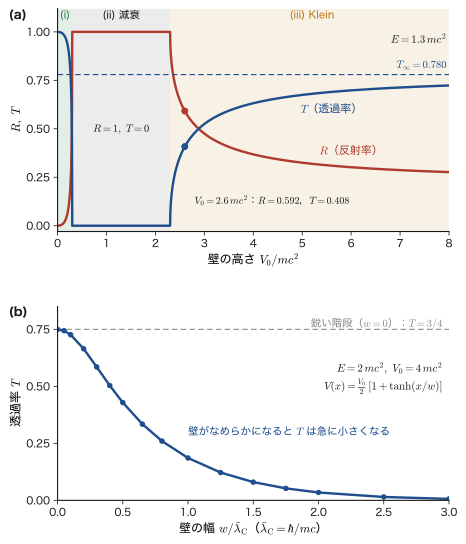
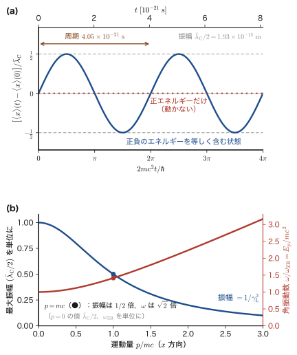

第64章空孔理論と反粒子 — 負エネルギー解の読み方と Klein のパラドックス
第62章で，Dirac（ディラック）方程式の自由粒子の解には，エネルギーが $E=+\sqrt{p^2c^2+m^2c^4}$ の解が 2 つと，$E=-\sqrt{p^2c^2+m^2c^4}$ の解が 2 つあることを見た．エネルギーが負の電子などというものは，実験でも日常でも見たことがない．しかも，もし存在するなら，正エネルギーの電子は光を出しながら限りなく低いエネルギーへ落ち込み，原子も物質も存在できなくなってしまう．Klein–Gordon 方程式で「確率が負になる」という困難を避けるために時間の 1 階微分の方程式を作った Dirac は，今度は負エネルギー解という新しい困難に正面からぶつかった．この章は，その困難をどう読み替えたか，そして読み替えの結果として何が予言され，何が発見されたかの物語である．
Dirac の答えは大胆だった．「負エネルギーの状態は，最初からすべて電子で埋まっている．それが真空である」（1930 年）．電子は Pauli の排他原理に従う（第23章 23.4）から，正エネルギーの電子は埋まった状態へは落ちられない．この「海」から電子が 1 個だけ抜けると，そこに「穴」が残る．穴は電子とちょうど逆の量子数をもつ：エネルギーも運動量もスピンも電荷も符号が逆で，質量は電子と同じである．つまり電子と同じ質量の正電荷の粒子，陽電子（positron）である．これが 1931 年の予言であり，1932 年に Anderson（アンダーソン）が宇宙線の霧箱写真の中に実際に見つけた．この筋書きは，半導体の価電子帯に電子が詰まっていて，電子が抜けた後の「正孔」が正電荷の粒子のように振る舞うという，材料工学の学生にはおなじみの話とそっくりである．Dirac の真空は，ギャップが $2mc^2=1.022\ \mathrm{MeV}$ の「絶縁体」と見なせる．
この章では，まず負エネルギー解を捨てられない理由と Dirac の海，穴の量子数，Dirac の最初の誤解（陽子説）から陽電子の予言までを追い，対生成のしきい値を求める（64.1 節）．次に，「穴」の波動関数を具体的に作る電荷共役 $\psi^c=i\gamma^2\psi^*$ を導き，静止系の 1 例と数値で確かめる（64.2 節）．陽電子の発見と，対消滅の運動学，そして PET（陽電子放出断層撮影）や陽電子消滅寿命法など，材料工学につながる応用を扱う（64.3 節）．64.4 節では，負エネルギー解が「本物」であることを示す Klein のパラドックス——高いポテンシャルの壁に電子がほとんど止められずに透過する現象——を，1 次元の階段ポテンシャルで最後まで計算する．64.5 節では，静止している電子の位置が $\hbar/mc$ 程度の範囲で振動するという Zitterbewegung（ツィッターベヴェーグング，「震える運動」）を導き，1 個の粒子として電子を記述することの限界を示す．
空孔理論は現在では「発見的な地図」の位置づけである．無限に多い電子の海という描像は，場の量子論（第65章）では粒子と反粒子を対等に扱う生成・消滅演算子の言葉に置き換えられ，Pauli の原理をもたないボソンにも反粒子があることも説明される．それでも，この章で得る道具（負エネルギー解の物理的な読み方，電荷共役，Klein の階段の計算，Zitterbewegung）は，素粒子物理学（AD 09）の入口で再び出会う．狭ギャップ半導体やグラフェンの電子が Dirac 方程式に似た分散をもつことから，固体中の電子に対してもそのまま実験的な意味をもつ．
- 負エネルギー解を捨ててはいけない理由を 2 つ（完全系と，光子放出による崩壊）の観点から説明し，Dirac の海と Pauli の排他原理から真空を定義できること
- 海から電子を 1 個取り去った「穴」の量子数を，エネルギー・運動量・スピン・電荷の符号が反転するという形で導き，陽電子の質量が電子と等しいことを示せること
- 価電子帯の正孔との類推（$2mc^2=1.022\ \mathrm{MeV}$ と $E_g=1.12\ \mathrm{eV}$ の比）を述べ，対生成のしきい値 $2mc^2(1+m/M)$ を不変質量から導けること
- 電荷共役 $\psi^c=i\gamma^2\psi^*$ を定義して，$\gamma^2\gamma^{\mu*}(\gamma^2)^{-1}=-\gamma^\mu$ から，電荷 $q$ の負エネルギー解が電荷 $-q$ の正エネルギー解に対応することを示し，静止系の具体例と $v=i\gamma^2u^*$ で確かめられること
- Anderson の発見，対消滅 $\mathrm{e^+e^-}\to2\gamma$ の運動学（$2\times511\ \mathrm{keV}$，Doppler 広がり $\Delta E=p_{\mathrm L}c/2$），PET，陽電子消滅寿命法，ポジトロニウムの性質を数値とともに説明できること
- 1 次元の Dirac 方程式の階段ポテンシャルで，$r=(a-a')/(a+a')$，$R=\bigl((1-\rho_{\mathrm K})/(1+\rho_{\mathrm K})\bigr)^2$，$T=4\rho_{\mathrm K}/(1+\rho_{\mathrm K})^2$ を導き，3 つの領域と，Klein 領域での $p'\lt 0$ の枝を群速度から決められること．数値例と Sauter の臨界電場を計算できること
- Heisenberg 描像で Zitterbewegung の解 $x(t)$ を導き，周波数 $2E/\hbar$ と振幅 $\hbar/(2mc)$ の起源（正負エネルギー成分の干渉）と，1 粒子描像の限界を説明できること
もとにしたノート：本章はノートにない内容を補った章である．関連するノート：望月泰英『物理学ノート 量子力学3』 p. 73（第XI部の章扉の見出し「相対論的量子力学」）と pp. 1–10（スピンと Pauli 行列）．
64.1 負エネルギー解の困難と Dirac の海 — 「穴」としての陽電子
第62章で得た自由粒子の解をもう一度まとめよう．運動量 $\bm{p}$ の平面波解は，$E=+E_p$ の 2 つ（$u(\bm{p},\uparrow)$，$u(\bm{p},\downarrow)$）と $E=-E_p$ の 2 つ（$w(\bm{p},\uparrow)$，$w(\bm{p},\downarrow)$）であり，$E_p=\sqrt{p^2c^2+m^2c^4}$ である（本章でも $m$ は電子の質量 $m_{\mathrm e}$ を表す）．この節では，まず負エネルギー解を「無かったこと」にできない理由を 2 つ示し（64.1.1），次に Dirac が与えた読み替え（64.1.2〜64.1.4）と，その材料工学での類似物（64.1.5），そして実際に対を作るのに必要なエネルギー（64.1.6）を調べる．
64.1.1 負エネルギー解を捨てられない 2 つの理由
負エネルギーの解を，「物理的でないから」という理由で方程式の解から除いてしまえばよいのではないか．そう考えたくなるが，それはできない．理由は 2 つある．
理由 1：完全系の一部である
各運動量 $\bm{p}$ に対し，$u(\bm{p},\uparrow)$，$u(\bm{p},\downarrow)$，$w(\bm{p},\uparrow)$，$w(\bm{p},\downarrow)$ は，エルミート行列 $H(\bm{p})=c\,\bm{\alpha}\cdot\bm{p}+\beta mc^2$ の固有ベクトルであり，互いに直交して 4 成分の空間の基底をなす（定理62.6）．したがって，任意の 4 成分の波動関数 $\psi(\bm{x})$ は，平面波の重ね合わせとして
$$ \psi(\bm{x})=\int\frac{\dd^3p}{(2\pi\hbar)^{3/2}}\sum_{s}\Bigl[b(\bm{p},s)\,u(\bm{p},s)+d(\bm{p},s)\,w(\bm{p},s)\Bigr]e^{i\bm{p}\cdot\bm{x}/\hbar} $$と展開され，$u$ だけでは基底が足りない．電子を空間のある範囲に閉じ込めた状態，たとえば原子の中の電子の波動関数を作ろうとすると，必ず $w$ の成分が混ざる．
この混ざり具合を見積もってみよう．空間に局在した電子の波動関数として，上 2 成分だけが $0$ でない状態 $\psi=(\chi\,\phi(\bm{x}),\ 0)^{\mathsf T}$（$\chi$ は 2 成分のスピン状態，$\phi(\bm{x})$ は位置の関数）を考える．非相対論的な電子の波動関数（Schrödinger 方程式の解）に，小さい成分としてゼロを付け加えた，もっとも素朴な 4 成分の状態である．運動量 $\bm{p}$ の成分について，負エネルギーの空間への射影演算子は $P_-=\dfrac12\left(1-\dfrac{H(\bm{p})}{E_p}\right)$ である（$H(\bm{p})$ の固有値は $\pm E_p$ だけなので，$H/E_p$ の固有値は $\pm1$ であり，$P_-$ は $-E_p$ の固有空間への射影になる．逆の符号では $P_+=\tfrac12(1+H/E_p)$ で，$P_++P_-=1$）．その期待値は，$\braket{\psi}{\beta\psi}=+1$（上 2 成分だけの状態では $\beta=+1$），$\braket{\psi}{\bm{\alpha}\psi}=0$（$\alpha_i$ は上 2 成分と下 2 成分をつなぐ非対角ブロックなので，下 2 成分が $0$ の状態では $\psi^\dagger\alpha_i\psi=0$）より，
\begin{equation} W(\bm{p})=\mel{\psi}{P_-}{\psi}=\frac12\left(1-\frac{\braket{\psi}{H(\bm{p})\psi}}{E_p}\right)=\frac12\left(1-\frac{mc^2}{E_p}\right)=\frac{E_p-mc^2}{2E_p} \label{eq:64-neg} \end{equation}である．運動量 $\bm{p}$ の成分の $W(\bm{p})$ の割合が負エネルギーの解になっている．これは第62章の小成分の重み（62.5.3 節の $\abs{u_B}^2$）と同じ形である．$\abs{\bm{p}}\ll mc$ では $W\approx p^2/(4m^2c^2)$ である（$E_p\approx mc^2+p^2/2m$ を代入した）．
例題64.1 局在した電子に含まれる負エネルギー成分
3 次元の等方的な Gauss 関数 $\phi(\bm{r})\propto e^{-r^2/2d^2}$（幅 $d$）で上 2 成分だけを満たした状態に含まれる，負エネルギー状態の重み $W=\displaystyle\int W(\bm{p})\,\abs{\tilde\phi(\bm{p})}^2\,\dd^3p$ を，$d=\hbar/mc$（電子の換算 Compton 波長 $\bar\lambda_{\mathrm C}=3.862\times10^{-13}\ \mathrm{m}$），$d=10\,\bar\lambda_{\mathrm C}$，$d=a_0$（Bohr 半径）について求めよ．ここで $\tilde\phi(\bm{p})$ は運動量表示の波動関数で $\int\abs{\tilde\phi}^2\dd^3p=1$ とする．
（この例題は積分の評価を含むので少し重い．難しければ，解答の結果の 3 つの数値と最後の結論だけを読んで先へ進んでよい．）
解答 $\phi(\bm{r})\propto e^{-r^2/2d^2}$ の運動量表示は Gauss 関数の Fourier 変換（第10章 10.6 の規約）で $\tilde\phi(\bm{p})\propto e^{-p^2d^2/2\hbar^2}$ となるので，運動量の確率密度は $\abs{\tilde\phi(\bm{p})}^2=\left(\dfrac{d}{\hbar\sqrt\pi}\right)^{3}e^{-p^2d^2/\hbar^2}$（$\int\abs{\tilde\phi}^2\dd^3p=1$ を満たす）である．したがって，$x\equiv p/mc$，$\delta\equiv d/\bar\lambda_{\mathrm C}$ とおくと，
$$ W=\int_0^\infty 4\pi x^2\left(\frac{\delta}{\sqrt\pi}\right)^{3}e^{-x^2\delta^2}\;\frac12\left(1-\frac{1}{\sqrt{1+x^2}}\right)\dd x. $$$x\ll1$ で $\frac12\bigl(1-(1+x^2)^{-1/2}\bigr)\approx x^2/4$ と近似でき，平均 $\expval{x^2}=\dfrac{3}{2\delta^2}$（運動量の 2 乗平均 $\expval{p^2}=3\hbar^2/2d^2$ を $m^2c^2$ で割ったもの）を使うと，$d\gg\bar\lambda_{\mathrm C}$ では $W\approx\dfrac{\expval{x^2}}{4}=\dfrac{3}{8\delta^2}$ となる．$\delta$ が小さいときはこの近似が使えないので，積分そのものを評価する．第 1 項 $\tfrac12$ は規格化の積分から直ちに出る．第 2 項は第 2 種変形 Bessel 関数 $K_\nu$ で閉じた形になり，
$$
W(\delta)=\frac12-\frac{\delta^3}{2\sqrt\pi}\,e^{\delta^2/2}\Bigl[K_1\bigl(\tfrac{\delta^2}{2}\bigr)-K_0\bigl(\tfrac{\delta^2}{2}\bigr)\Bigr]
$$
と書ける（$K_\nu$ は SciPy の scipy.special.kv などで計算できる．$\delta$ が大きいと $e^{\delta^2/2}$ が大きくなって桁落ちするので，そのときは上の近似式 $3/(8\delta^2)$ を使う）．$\delta=1$ と $\delta=10$ の値は，この式でも，数値積分（scipy.integrate.quad）でも同じになる．結果は，
- $d=\bar\lambda_{\mathrm C}$（$\delta=1$）：$W=0.160$．近似式は $0.375$ で，$x\ll1$ の近似は使えない．
- $d=10\,\bar\lambda_{\mathrm C}=3.9\ \mathrm{pm}$（$\delta=10$）：$W=3.7\times10^{-3}$．近似式 $3/(8\delta^2)=3.75\times10^{-3}$ とよく一致する．
- $d=a_0=5.29\times10^{-11}\ \mathrm{m}$（$\delta=a_0/\bar\lambda_{\mathrm C}=1/\alpha=137.04$）：数値積分で $W=2.0\times10^{-5}$．近似式 $3/(8\delta^2)=3\alpha^2/8=2.0\times10^{-5}$ に等しい．
原子の大きさに閉じ込めた電子でも負エネルギーの重みは $10^{-5}$ 程度あり（これは水素の 1s 状態で見積もった $\alpha^2/4=1.3\times10^{-5}$ とほぼ同じ桁），電子を $\bar\lambda_{\mathrm C}$ 程度に閉じ込めると 16 % が負エネルギーの成分になる．一般に，電子を狭い領域に局在させるほど，正エネルギー解だけでは表せなくなる．
理由 2：正エネルギーの電子は光を出して負エネルギーへ落ちられる
電子は電磁場（光子）と相互作用する．エネルギー保存則を満たすかぎり，正エネルギーの電子が光子を放出して，より低いエネルギーの状態へ移る遷移が起こる．負エネルギーの状態 $E\le-mc^2$ がもし空いていて，上にも下にも限りなく続いているなら，正エネルギーの電子（$E\ge mc^2$）は $\hbar\omega\ge2mc^2=1.022\ \mathrm{MeV}$ の光子を出して負エネルギーの状態へ落ち，さらに光子を出して，いくらでも下へ落ち続ける．エネルギーの下限がないので，基底状態が存在せず，水素原子の 1s 電子も，いつかは光を出して負のエネルギーの状態へ落ちてしまうはずである．原子が安定に存在しているという観測事実と，矛盾する．
注意：「正エネルギー解だけを使う」は外場があると成り立たない
自由粒子なら，正エネルギーの解と負エネルギーの解は混ざらない（$H(\bm{p})$ の異なる固有ベクトルで，直交する）．しかし，ポテンシャルや電磁場がある場合には，正エネルギーの状態を負エネルギーの状態に結びつける行列要素が一般に $0$ ではない．この章の 64.4 節で見る Klein のパラドックスは，その典型例で，ポテンシャルの壁に電子を当てると，電子が負エネルギーの連続状態に結びつくのが直接の帰結として現れる．負エネルギー解は，数学的な副産物ではなく，方程式が実際に予言する物理の一部である．
64.1.2 Dirac の海
Dirac は 1930 年に，この 2 つの困難を 1 つの仮定で解決しようとした．電子は Pauli の排他原理に従う Fermi 粒子である（第23章 23.4，AD 03 第52章 52.4）．1 つの状態には電子は 1 個しか入れない．そこで次の仮定をおく．
公理64.1 Dirac の海（空孔理論の要請）
負エネルギーの状態は，（各運動量 $\bm{p}$ とスピンの向きについて）すべて電子で満たされている．この状態を真空（vacuum）とよび，「Dirac の海」（Dirac sea）ともいう．正エネルギーの状態は空である．観測されるのは，真空からのずれだけである．
この仮定のもとでは，理由 2 の困難が消える．正エネルギーの電子が負エネルギーの状態へ落ちようとしても，そこはすでに電子で満たされているので，Pauli の排他原理により落ちられないのである．原子の 1s 電子がそれ以上落ちないことと，同じ理屈である（$1\mathrm{s}$ には 2 個までの電子しか入れず，それ以上の電子は $2\mathrm{s}$ などに入る）．
無限個の電子が詰まった海という描像は奇妙に見える．しかし，「観測されるのは真空からのずれだけである」という前提のもとでは，海の全体がもつ電荷・エネルギー・運動量は（無限大であっても）一様な背景であり，たとえば海の電荷は一様な正電荷の背景と打ち消されていると考えて，基準（$0$）に選べばよい（金属の電子の議論で，電子の海の負電荷を，陽イオンの一様な正電荷が打ち消すとして「ジェリウム模型」を使うのと同じ考え方である）．運動量は，$\bm{p}$ と $-\bm{p}$ の電子が対で詰まっているので，海全体では $0$ になる．スピンも $\uparrow$ と $\downarrow$ が対なので $0$ である．
海に電子を 1 個入れることは，正エネルギーの状態に電子を置くことに等しく，これが普通の電子である．一方，次のような変化も起こりうる．光子が負エネルギーの状態にある電子を正エネルギーの状態まで持ち上げる．すると，もとの負エネルギーの状態に空きができる．この空きを「穴」とよぶ．図64.1 で，Dirac の海の様子を，半導体の価電子帯と並べて描いた．
64.1.3 穴の量子数 — 取り去った電子と逆の符号
穴は，どんな量子数をもつ粒子として観測されるだろうか．真空を基準（エネルギー，運動量，スピン，電荷のすべてが $0$）とする．その真空から，エネルギー $-E_p$，運動量 $\bm{p}$，スピンの $z$ 成分 $S_z=+\hbar/2$（$\uparrow$），電荷 $-e_0$ をもつ電子 1 個を取り去ると，残りの状態の全量は，真空の値から取り去った電子の値を引いたものになる．
定理64.1 穴の量子数
海から，エネルギー $-E_p$，運動量 $\bm{p}$，スピンの $z$ 成分 $S_z$，電荷 $-e_0$ の電子を取り去ったときにできる穴は，
\begin{equation} E_{\mathrm{hole}}=+E_p,\qquad \bm{p}_{\mathrm{hole}}=-\bm{p},\qquad S_{z,\mathrm{hole}}=-S_z,\qquad Q_{\mathrm{hole}}=+e_0 \label{eq:64-hole} \end{equation}をもつ．すなわち，エネルギー・運動量・スピン・電荷の符号がすべて反転し，質量は電子と同じ $m$ である．
導出
加法的な量（エネルギー，運動量，スピンの $z$ 成分，電荷）の全量を $A$ と書く．真空の値を基準にとる（$A_{\mathrm{vac}}=0$）．電子を取り去った状態の全量は $A=A_{\mathrm{vac}}-a=-a$ である（$a$ は取り去った電子の値）．これに $a=(-E_p,\ \bm{p},\ S_z,\ -e_0)$ を代入すると，式 \eqref{eq:64-hole} の 4 つの関係が得られる．
質量も，同じ結果から決まる．穴の運動量を $\bm{p}_{\mathrm{hole}}=-\bm{p}$ とおくと，穴のエネルギーは $E_{\mathrm{hole}}=E_p=\sqrt{p^2c^2+m^2c^4}=\sqrt{\abs{\bm{p}_{\mathrm{hole}}}^2c^2+m^2c^4}$ である．これは質量 $m$ の粒子のエネルギーと運動量の関係そのものである．したがって，穴は質量 $m$，つまり電子と同じ質量の粒子として振る舞う．さらに，穴の速度は，$\bm{v}_{\mathrm{hole}}=\partial E_{\mathrm{hole}}/\partial\bm{p}_{\mathrm{hole}}=c^2\bm{p}_{\mathrm{hole}}/E_{\mathrm{hole}}=-c^2\bm{p}/E_p$ で，取り去った負エネルギー状態の群速度 $\partial(-E_p)/\partial\bm{p}=-c^2\bm{p}/E_p$ と等しい．
（導出終わり）
まとめたものが表64.1 と図64.2 である．質量が電子と同じで電荷が逆の，スピン 1/2 の粒子が現れる．これが陽電子（positron，反電子）である．負エネルギー状態の電子の「不在」は，正エネルギーの陽電子の「存在」として観測される．
| 物理量 | 取り去る電子（負エネルギー状態） | 穴（陽電子） |
|---|---|---|
| エネルギー | $-E_p$ | $+E_p$ |
| 運動量 | $\bm{p}$ | $-\bm{p}$ |
| スピンの $z$ 成分 | $+\hbar/2$（$\uparrow$） | $-\hbar/2$（$\downarrow$） |
| 電荷 | $-e_0$ | $+e_0$ |
| 質量 | 電子と同じ：$m=m_{\mathrm e}$ | |
例題64.2 穴の量子数の具体例 — $p=mc$ の場合
海から，運動量 $\bm{p}=mc\,\bm{e}_z$ で，スピンが $\uparrow$ の負エネルギーの電子 $w(\bm{p},\uparrow)$ を取り去る．(1) 取り去る電子の量子数を求めよ．(2) できる穴（陽電子）の量子数，運動エネルギー，速さ，運動の向きを求めよ．$mc^2=510.999\ \mathrm{keV}$．
解答 (1) $p=mc$ のとき $E_p=\sqrt{p^2c^2+m^2c^4}=\sqrt2\,mc^2=722.66\ \mathrm{keV}$．取り去る電子の量子数は，エネルギー $E=-722.66\ \mathrm{keV}$，運動量 $\bm{p}=mc\,\bm{e}_z$（大きさ $pc=510.999\ \mathrm{keV}$），$S_z=+\hbar/2$，電荷 $-e_0$ である．負エネルギーの電子の速度は，群速度 $\partial E/\partial p=-c^2p/E_p=-c/\sqrt2$ で，$-z$ 向きである（運動量は $+z$ 向きなのに速度は逆向き）．
(2) 式 \eqref{eq:64-hole} より，穴のエネルギーは $+722.66\ \mathrm{keV}$，運動量は $-mc\,\bm{e}_z$，$S_z=-\hbar/2$（$\downarrow$），電荷は $+e_0$ である．質量が $m$ なので，運動エネルギーは $K=E_p-mc^2=(\sqrt2-1)\,mc^2=211.66\ \mathrm{keV}$．速さは $v=c^2p/E_p=c/\sqrt2=0.7071\,c$ で，向きは運動量の向きの $-z$ 向きである（取り去った状態の群速度と同じ向き）．つまり，$211.66\ \mathrm{keV}$ の運動エネルギーで $-z$ 方向に進む，スピン $\downarrow$ の正電荷の粒子として観測される．
64.1.4 Dirac の陽子説から陽電子の予言へ
当初，Dirac はこの穴を「陽子」と考えた（1930 年）．当時，知られていた正電荷の粒子は陽子だけだったからである．そうすれば，新しい粒子を仮定しなくても電子と陽子だけで物質が説明できる．しかし，この考えにはすぐに問題が指摘された．Oppenheimer（オッペンハイマー，1930 年）は，もし穴が陽子なら，水素原子の中の電子は穴に落ちて消滅してしまうので，原子の寿命は極端に短くなると指摘し，Tamm（タム）も同じ指摘をした．さらに Weyl（ワイル，1931 年）は，この理論の対称性から，穴の質量は電子の質量と正確に等しくなければならないと論じた（実際，上の導出で質量は $m$ と決まる）．陽子の質量は電子の約 1836 倍であり，一致しない．こうして Dirac は 1931 年に，電子と同じ質量で正電荷の新しい粒子（当時の呼び方で anti-electron）の存在を予言した．この予言は翌 1932 年，Anderson が宇宙線の霧箱写真の中に陽電子を見つけて（64.3 節）確かめられた．
64.1.5 価電子帯の正孔との類推
Dirac の真空は，半導体や絶縁体の基底状態ととてもよく似ている．半導体の価電子帯はほぼ電子で満たされていて，伝導帯は空である．価電子帯の電子を光や熱で伝導帯に励起すると，電子が抜けた価電子帯に正孔（hole）ができる．正孔は，「抜けた電子とは逆の符号の運動量・スピン・電荷をもつ準粒子」として振る舞う（第41章 41.6，第57章 57.7）．これは上の定理64.1 とまったく同じ規則である．Dirac の海が価電子帯，正エネルギーの連続が伝導帯に，負エネルギーと正エネルギーの間のギャップ $2mc^2$ が禁制帯 $E_g$ に対応する．
応用：半導体の正孔と Dirac の穴 — ギャップの大きさを比べる
真空のギャップは $2mc^2=1.022\ \mathrm{MeV}$ である．Si のバンドギャップは $E_g=1.12\ \mathrm{eV}$ であり，その比は $\dfrac{2mc^2}{E_g}=\dfrac{1.022\times10^6\ \mathrm{eV}}{1.12\ \mathrm{eV}}=9.1\times10^5$ である．真空は，Si より約 100 万倍（$9.1\times10^5$ 倍）も硬い「絶縁体」であり，電子・陽電子の対をつくるには $1.022\ \mathrm{MeV}$ 以上の光子が必要になる．その光子の波長は，$\lambda=hc/(2mc^2)=1239.84\ \mathrm{eV\,nm}/(1.022\times10^6\ \mathrm{eV})=1.213\ \mathrm{pm}$ で，X 線よりずっと短いガンマ線である．
熱励起にも同じ類似が成り立つ．真性半導体のキャリア密度は，化学ポテンシャルがギャップの中央にあるとして，（AD 03 第52章 52.5 の Fermi–Dirac 分布から）$n\propto e^{-E_g/2k_{\mathrm B}T}$ に従う．この式で $E_g\to2mc^2$ とおくと，熱的な対生成の密度は $\propto e^{-mc^2/k_{\mathrm B}T}$ となる．$mc^2/k_{\mathrm B}=5.93\times10^{9}\ \mathrm{K}$ なので，温度が $10^9\ \mathrm{K}$ の程度にならないと陽電子は大量には現れない（宇宙の初期や超新星爆発のような環境である）．室温の Si では $E_g/2k_{\mathrm B}T=1.12/(2\times0.02585)=21.7$ なので，$e^{-21.7}\approx4\times10^{-10}$ の因子がかかる．
違いもある．半導体では，価電子帯の電子の海は現実に存在し，結晶格子が運動量（結晶運動量は逆格子ベクトルの差を除いて保存）を与えてくれる．Dirac の真空では，運動量保存は厳密に成り立つので，$\gamma\to\mathrm{e^+e^-}$ には反跳を受け取る第 3 の物体（原子核など）が必要になる（次項）．正孔と熱励起の詳しい扱いは，固体物理学（AD 06）の第17章（17.4 正孔，17.5 真性キャリア濃度）にある．
64.1.6 対生成のしきい値
真空中で 1 個の光子が電子・陽電子の対に変わる過程 $\gamma\to\mathrm{e^+e^-}$ は，エネルギーと運動量を同時に保存することはできない．光子の 4 元運動量の大きさの 2 乗は $(E_\gamma/c)^2-\abs{\bm{p}_\gamma}^2=0$（質量ゼロ）だが，対の不変質量は少なくとも $2m$ だからである（AD 03 第57章 57.7 の 2 体崩壊の議論と同じ論法）．そこで，質量 $M$ の原子核などの近くで，反跳を与える相手がいる場合を考える．光子のエネルギーが最小になるのは，生成後に $\mathrm{e^+}$，$\mathrm{e^-}$，原子核がすべて同じ速度で進む場合である（AD 03 第57章 57.8 の方法）．
公式64.1 対生成のしきいエネルギー
質量 $M$ の静止した粒子の近くで，光子が電子・陽電子の対を作る反応 $\gamma+M\to M+\mathrm{e^+}+\mathrm{e^-}$ が起こりうる最小の光子エネルギー（しきいエネルギー）は
\begin{equation} E_{\mathrm{th}}=2mc^2\left(1+\frac{m}{M}\right) \label{eq:64-threshold} \end{equation}である．$M\gg m$ なら $E_{\mathrm{th}}\to2mc^2=1.022\ \mathrm{MeV}$．標的が電子（$M=m$）の場合は $4mc^2=2.044\ \mathrm{MeV}$ になる．
導出
初期状態の全エネルギーは $E_\gamma+Mc^2$，全運動量の大きさは $\abs{\bm{p}_\gamma}=E_\gamma/c$ である．全 4 元運動量 $P^\mu$ を $c$ 倍して，エネルギーの次元にそろえた不変量 $s\equiv(P_\mu P^\mu)c^2=(\text{全エネルギー})^2-(\text{全運動量})^2c^2$ を作ると，
$$ s=(E_\gamma+Mc^2)^2-\abs{\bm{p}_\gamma}^2c^2=(E_\gamma+Mc^2)^2-E_\gamma^2=2E_\gamma Mc^2+M^2c^4 $$である．終状態（$\mathrm{e^+}$，$\mathrm{e^-}$，質量 $M$ の粒子）の $s$ は，全運動量が $0$ となる重心系で評価すると（全エネルギー）$^2$ に等しく，各粒子のエネルギーは静止エネルギー以上なので，$s\ge(M+2m)^2c^4$ である．しきいでは等号が成り立ち，3 個の粒子は重心系で静止している（実験室系ではすべて同じ速度で進む）：
$$ 2E_{\mathrm{th}}Mc^2+M^2c^4=(M+2m)^2c^4\ \Longrightarrow\ 2E_{\mathrm{th}}Mc^2=(4Mm+4m^2)c^4\ \Longrightarrow\ E_{\mathrm{th}}=\frac{4Mm+4m^2}{2M}\,c^2=2mc^2\left(1+\frac{m}{M}\right) $$となる（2 つめの式は $(M+2m)^2=M^2+4Mm+4m^2$ から $M^2$ を消し，最後の式は $4Mm+4m^2=4Mm(1+m/M)$ による）．
（導出終わり）
例題64.3 対生成のしきい値と，生じた対の運動エネルギー
(1) 陽子（$M=m_{\mathrm p}=1836.15\,m$）の近くで光子が電子・陽電子の対を作るしきいエネルギーを求めよ．(2) 電子の近く（三重項生成 $\gamma+\mathrm{e^-}\to\mathrm{e^-}+\mathrm{e^+}+\mathrm{e^-}$）では？ (3) エネルギー $2.0\ \mathrm{MeV}$ の光子が重い原子核の近くで対を作るとき，核の反跳を無視して，電子・陽電子が 1 個あたりに分け合う運動エネルギーを求めよ．(4) 光子のエネルギーが $1.5\ \mathrm{MeV}$ のときは何が起こるか．
解答 $2mc^2=1.021998\ \mathrm{MeV}$ を使う．(1) 式 \eqref{eq:64-threshold} に $m/M=1/1836.15=5.446\times10^{-4}$ を代入して，$E_{\mathrm{th}}=1.021998\times(1+5.446\times10^{-4})\ \mathrm{MeV}=1.02255\ \mathrm{MeV}$．$2mc^2$ との差は $0.557\ \mathrm{keV}$ で，これがほぼそのまま陽子の反跳運動エネルギーになる．しきいでは $\mathrm{e^+}$，$\mathrm{e^-}$，陽子が同じ速度で進むので，この運動エネルギーは質量の比で分けられ，陽子の取り分は $M/(M+2m)=0.9989$（約 $99.9\ \%$），残りの約 $0.06\ \mathrm{keV}$ が電子と陽電子の運動エネルギーである．(2) $M=m$ なので，$E_{\mathrm{th}}=2mc^2\times2=4mc^2=2.044\ \mathrm{MeV}$．標的の電子が反跳を受けるので，陽子より $1\ \mathrm{MeV}$ ほど高いエネルギーが要る．(3) 核の反跳を無視すると，光子のエネルギーのうち，静止エネルギー $2mc^2$ を使った残りが運動エネルギーになる：$2.0-1.022=0.978\ \mathrm{MeV}$．電子と陽電子に等分されるなら，$0.978/2=0.489\ \mathrm{MeV}$ である（実際の分配は等分とは限らない）．(4) $1.5\ \mathrm{MeV}\gt 1.022\ \mathrm{MeV}$ でも，電子が標的の場合のしきい値 $2.044\ \mathrm{MeV}$ を下回るので，電子の場では対生成は起こらない．原子核の場では $1.5\ \mathrm{MeV}$ でも対を作れるが，$1.5\ \mathrm{MeV}$ のガンマ線の多くは Compton 散乱で物質と相互作用する（対生成の確率は，光子のエネルギーが高く，標的の原子番号 $Z$ が大きいほど大きくなる）．
64.1.7 空孔理論の限界 — 「発見的な地図」として
Dirac の海は，陽電子の存在を予言した点で大きな成功を収めたが，そのままの形で最終的な理論にはならなかった．
- 無限に多い電子の海：海の電荷・エネルギーは無限大である．真空を基準にとって引き算すれば済むと述べたが，これは理論の整合性の問題（無限大の処理）であり，第65章で見る場の量子論の正規積（normal ordering）という操作に置き換えられる．
- 電子と陽電子の非対称性：空孔理論では電子は「粒子」，陽電子は「穴」と，役割が非対称に見える．実際の自然界では，両者は完全に対等である．
- ボソンには使えない：Pauli の排他原理が効かないボソン（Klein–Gordon 方程式の粒子，たとえば $\pi^+$ 中間子）には，海を埋めて落ちられなくするという論法が使えない．しかし，ボソンにも反粒子がある（$\pi^+$ に対する $\pi^-$，$W^+$ に対する $W^-$）．
この 3 つの問題は，場の量子論で粒子と反粒子を対等に扱う生成・消滅演算子の言葉で整理される（第65章）．空孔理論は，その結論（反粒子が存在する）を発見的に導くための地図と考えればよい．ただし，「負エネルギー状態がすべて埋まっている」という描像は，半導体の価電子帯のように，固体中の電子と正孔の話にはそのまま現実の意味をもつ．
関連シミュレーター：Relativistic-QM-derivation §3（Dirac 方程式：負エネルギー解，Dirac の海，反粒子）．材料計算の立場からの Dirac 方程式とスピノルの紹介は，マテリアル計算科学（AD 05）の第7章（7.10）にある．
64.2 電荷共役 — 「穴」は反粒子である
64.1 節では，穴の量子数を「海から取り去った電子の量子数の符号を反転したもの」として求めた．しかし，陽電子を本格的に扱うには，穴の波動関数が必要になる．陽電子が電磁場の中でどう運動するかは，陽電子の波動関数が満たす方程式で決まる．この節では，負エネルギー解 $\psi$ から，電荷が逆の粒子の正エネルギー解 $\psi^c$ を機械的に作る操作（電荷共役，charge conjugation）を導く．結論は，「電荷 $q$ の電子の負エネルギー解の不在」と「電荷 $-q$ の粒子の正エネルギー解」が，同じ 1 つの対応でつながることである．
64.2.1 電磁場の中の Dirac 方程式と複素共役
電荷 $q$ の粒子が電磁場（スカラーポテンシャル $\varphi_{\mathrm{el}}$，ベクトルポテンシャル $\bm{A}$）の中にあるとき，運動量を最小結合 $\hat{\bm{p}}\to\hat{\bm{p}}-q\bm{A}$ に，エネルギーを $i\hbar\,\partial_t\to i\hbar\,\partial_t-q\varphi_{\mathrm{el}}$ に置き換える（電子は $q=-e_0$．第63章）．ハミルトニアン形では
\begin{equation} i\hbar\frac{\partial\psi}{\partial t}=\Bigl[c\,\bm{\alpha}\cdot(\hat{\bm{p}}-q\bm{A})+\beta mc^2+q\varphi_{\mathrm{el}}\Bigr]\psi \label{eq:64-dirac-H} \end{equation}である．4 元ポテンシャル $A^\mu=(\varphi_{\mathrm{el}}/c,\ \bm{A})$（$A_\mu=(\varphi_{\mathrm{el}}/c,\ -\bm{A})$，AD 03 第58章 58.4）を使うと，式 \eqref{eq:64-dirac-H} は共変形
\begin{equation} \bigl(i\hbar\,\gamma^\mu\partial_\mu-q\,\gamma^\mu A_\mu-mc\bigr)\psi=0 \label{eq:64-dirac-em} \end{equation}に書ける．実際，式 \eqref{eq:64-dirac-em} を展開すると $i\hbar\gamma^0\dfrac1c\partial_t\psi+i\hbar\gamma^k\partial_k\psi-q\gamma^0\dfrac{\varphi_{\mathrm{el}}}{c}\psi+q\gamma^kA^k\psi-mc\psi=0$ である．左から $c\gamma^0$ を掛けて $\gamma^0\gamma^0=1$，$\gamma^0\gamma^k=\alpha_k$，$\gamma^0=\beta$ を使い，$-i\hbar\partial_k=\hat{p}_k$ と書き直して整理すると，式 \eqref{eq:64-dirac-H} になる．
式 \eqref{eq:64-dirac-em} の複素共役をとってみよう．$\partial_\mu$，$A_\mu$，$q$，$m$，$c$，$\hbar$ は実数（または実数の演算子）なので，変わるのは $i\to-i$ と，$\gamma^\mu\to\gamma^{\mu*}$，$\psi\to\psi^*$ だけである：
\begin{equation} \bigl(-i\hbar\,\gamma^{\mu*}\partial_\mu-q\,\gamma^{\mu*}A_\mu-mc\bigr)\psi^*=0. \label{eq:64-dirac-conj} \end{equation}この式の $\gamma^{\mu*}$ を $\gamma^\mu$ に戻して，「電荷が逆の粒子の方程式」の形にしたい．そのために，$\gamma^{\mu*}$ を $-\gamma^\mu$ に変換する行列が必要になる．
定理64.2 $\gamma^2$ による複素共役の変換
Dirac–Pauli 表示（Dirac の標準表示ともいう）の $\gamma^\mu$（$\mu=0,1,2,3$）について，
\begin{equation} \gamma^2\,\gamma^{\mu*}\,(\gamma^2)^{-1}=-\gamma^\mu\qquad(\mu=0,1,2,3) \label{eq:64-g2} \end{equation}が成り立つ．また $(\gamma^2)^2=-1$，$(\gamma^2)^{-1}=-\gamma^2$ である．
証明
Dirac–Pauli 表示では $\gamma^0=\mathrm{diag}(\mathbb{1},-\mathbb{1})$，$\gamma^i=\begin{pmatrix}0&\sigma_i\\-\sigma_i&0\end{pmatrix}$ である（第62章）．Pauli 行列のうち $\sigma_x$，$\sigma_z$ は実行列，$\sigma_y=\begin{pmatrix}0&-i\\i&0\end{pmatrix}$ は純虚数の行列である．したがって，$\gamma^0$，$\gamma^1$，$\gamma^3$ は実行列で $\gamma^{\mu*}=\gamma^\mu$，$\gamma^2$ は純虚数の行列で $\gamma^{2*}=-\gamma^2$ である．
$\mu=0,1,3$：$\gamma^{\mu*}=\gamma^\mu$ で，Clifford 代数（$\acomm{\gamma^\mu}{\gamma^\nu}=2g^{\mu\nu}$．定理62.4）から，$\mu\ne2$ なら $\gamma^2\gamma^\mu=-\gamma^\mu\gamma^2$ である．したがって $\gamma^2\gamma^{\mu*}(\gamma^2)^{-1}=\gamma^2\gamma^\mu(\gamma^2)^{-1}=-\gamma^\mu\gamma^2(\gamma^2)^{-1}=-\gamma^\mu$．
$\mu=2$：$\gamma^{2*}=-\gamma^2$ なので $\gamma^2\gamma^{2*}(\gamma^2)^{-1}=-\gamma^2\gamma^2(\gamma^2)^{-1}=-\gamma^2$．
最後に，$(\gamma^2)^2=g^{22}=-1$（Clifford 代数で $\mu=\nu=2$）から $(\gamma^2)^{-1}=-\gamma^2$ である．
（証明終わり）
式 \eqref{eq:64-dirac-conj} に左から $\gamma^2$ を掛け，$\psi^*$ の前に $(\gamma^2)^{-1}\gamma^2=1$ を挿入して式 \eqref{eq:64-g2} を使う．たとえば $\gamma^2\bigl(-i\hbar\gamma^{\mu*}\partial_\mu\bigr)(\gamma^2)^{-1}\gamma^2\psi^*=-i\hbar\,(-\gamma^\mu)\partial_\mu\,(\gamma^2\psi^*)=i\hbar\gamma^\mu\partial_\mu(\gamma^2\psi^*)$ となる．同様に $-q\gamma^{\mu*}A_\mu\to+q\gamma^\mu A_\mu$，$-mc$ は変わらないので，
$$ \bigl(i\hbar\,\gamma^\mu\partial_\mu+q\,\gamma^\mu A_\mu-mc\bigr)\,\gamma^2\psi^*=0 $$を得る．$\gamma^2\psi^*$ に定数因子（位相）をかけても方程式は変わらないので，慣習として $i$ を掛けて次のように定義する．
定義64.1 電荷共役
4 成分の波動関数 $\psi$ に対して，
\begin{equation} \psi^c\equiv i\gamma^2\psi^*\qquad\bigl(\text{成分で書くと }\psi^c=(\psi_4^*,\,-\psi_3^*,\,-\psi_2^*,\,\psi_1^*)^{\mathsf T}\bigr) \label{eq:64-cc} \end{equation}を $\psi$ の電荷共役（charge conjugate）という．ここで $i\gamma^2=\begin{pmatrix}0&0&0&1\\0&0&-1&0\\0&-1&0&0\\1&0&0&0\end{pmatrix}$（Dirac–Pauli 表示）である．
定理64.3 電荷共役は $q\to-q$ の方程式の解を与える
$\psi$ が電荷 $q$ の方程式 \eqref{eq:64-dirac-em} を満たすなら，$\psi^c=i\gamma^2\psi^*$ は電荷 $-q$ の方程式
\begin{equation} \bigl(i\hbar\,\gamma^\mu\partial_\mu+q\,\gamma^\mu A_\mu-mc\bigr)\psi^c=0 \label{eq:64-dirac-c} \end{equation}を満たす．さらに，(i) $\psi^{cc}=\psi$，(ii) $\psi^{c\dagger}\psi^c=\psi^\dagger\psi$（確率密度は変わらない）が成り立つ．
証明
前半は上の計算そのものである（$i\gamma^2\psi^*$ に $\gamma^2\psi^*$ の定数倍を代えても方程式は線形なので成り立つ）．(i) $\psi^c$ の複素共役は $(i\gamma^2\psi^*)^*=-i\,\gamma^{2*}\psi=-i(-\gamma^2)\psi=i\gamma^2\psi$ だから，$\psi^{cc}=i\gamma^2(\psi^c)^*=i\gamma^2\cdot i\gamma^2\psi=-(\gamma^2)^2\psi=\psi$ である．(ii) $i\gamma^2$ は，エルミート（$(\gamma^2)^\dagger=-\gamma^2$ なので $(i\gamma^2)^\dagger=-i\cdot(-\gamma^2)=i\gamma^2$）かつ $(i\gamma^2)^2=1$ だから，ユニタリー行列である．したがって $\psi^{c\dagger}\psi^c=\psi^{\mathsf T}(i\gamma^2)^\dagger(i\gamma^2)\psi^*=\psi^{\mathsf T}\psi^*=\psi^\dagger\psi$（成分の和なので転置しても同じ）．
（証明終わり）
これが求めていたものである．電荷 $q=-e_0$ の電子の方程式の解 $\psi$ から，電荷 $+e_0$ の粒子の方程式の解 $\psi^c$ ができる．とくに，$\psi$ が電子の負エネルギー解なら，$\psi^c$ は電荷 $+e_0$ の粒子の正エネルギー解になる．これを自由粒子で確かめよう．負エネルギー解 $\psi=w\,e^{i(\bm{p}\cdot\bm{x}+E_pt)/\hbar}$ の複素共役は $w^*e^{-i(\bm{p}\cdot\bm{x}+E_pt)/\hbar}=w^*e^{i[(-\bm{p})\cdot\bm{x}-E_pt]/\hbar}$ で，時間依存性が $e^{-iE_pt/\hbar}$（正エネルギー），空間依存性が運動量 $-\bm{p}$ の平面波である．つまり $\psi^c$ は，運動量 $-\bm{p}$，エネルギー $+E_p$ の解になる．これは 64.1 節の穴の量子数（エネルギーと運動量の符号の反転）と一致している．こうして，「穴の波動関数」は，取り去った電子の波動関数の電荷共役 $\psi^c$ として与えられる．
イメージ：なぜ複素共役が「時間の向きの反転」と「電荷の反転」を兼ねるのか
複素共役をとると $e^{-iEt/\hbar}\to e^{+iEt/\hbar}$ となり，時間依存性の位相が逆回りになる．すなわち，正エネルギーの解が負エネルギーの解に，負エネルギーの解が正エネルギーの解に変わる．では電荷の符号はどこで変わるのか．式 \eqref{eq:64-dirac-em} の各項が，複素共役とそれに続く $\gamma^2$ による変換（定理64.2）でどう変わるかを並べてみる．
- $i\hbar\gamma^\mu\partial_\mu$：複素共役で $i\to-i$ となり，$-i\hbar\gamma^{\mu*}\partial_\mu$．続いて $\gamma^{\mu*}\to-\gamma^\mu$ で，$+i\hbar\gamma^\mu\partial_\mu$．符号は結局もとに戻る（$i$ の反転と $\gamma$ の反転が打ち消す）．
- $-q\gamma^\mu A_\mu$：$i$ を含まないので，複素共役では符号が変わらず $-q\gamma^{\mu*}A_\mu$．続いて $\gamma^{\mu*}\to-\gamma^\mu$ で，$+q\gamma^\mu A_\mu$．符号が反転したまま残る．
- $-mc$：実数で $\gamma$ を含まないので，変わらない．
こうして，運動の項と質量の項はそのままで，電磁場との結合の項だけが逆符号になる．これが $q\to-q$ である．位相とのつながりは，ゲージ変換 $\psi\to e^{iq\chi/\hbar}\psi$（電荷 $q$ の波動関数の位相は $q$ に比例して回る）を共役にしてみると見える．$\psi^*\to e^{-iq\chi/\hbar}\psi^*=e^{i(-q)\chi/\hbar}\psi^*$ で，$\psi^*$ は電荷 $-q$ の波動関数の変換則に従う．この対応が，空孔理論の「電子の不在」＝「陽電子の存在」を波動関数で表現する．
64.2.2 静止系の例 — スピン↑の負エネルギー電子の不在
もっとも簡単な例として，静止系（$\bm{p}=0$）を調べる．第62章（62.5.1 節）の負エネルギー解 $u^{(3)}=(0,0,1,0)^{\mathsf T}$（$E=-mc^2$，$\Sigma_z=+1$，すなわちスピン $\uparrow$）に，時間依存性 $e^{+imc^2t/\hbar}$ を付ける．その電荷共役は，式 \eqref{eq:64-cc} の成分表示で，$\psi=(\psi_1,\psi_2,\psi_3,\psi_4)^{\mathsf T}=(0,0,1,0)^{\mathsf T}e^{imc^2t/\hbar}$ に対し
$$ \psi^c=(\psi_4^*,-\psi_3^*,-\psi_2^*,\psi_1^*)^{\mathsf T}=\begin{pmatrix}0\\-1\\0\\0\end{pmatrix}e^{-imc^2t/\hbar} $$となる．$\psi^c$ は $\beta=\mathrm{diag}(1,1,-1,-1)$ の固有値 $+1$，つまりエネルギー $+mc^2$ の解で，$\Sigma_z=-1$（スピン $\downarrow$）である．すなわち，スピン $\uparrow$ の負エネルギー電子の不在は，スピン $\downarrow$ の陽電子として観測される．これは表64.1 のスピンの反転（$\uparrow\to\downarrow$）と一致している．
例題64.4 電荷共役の確認 — 静止系と $p=mc$
(1) 静止系の負エネルギー・スピン $\uparrow$ の解 $\psi=(0,0,1,0)^{\mathsf T}e^{imc^2t/\hbar}$ の電荷共役 $\psi^c$ を，$i\gamma^2$ の行列を使って計算し，$\psi^c$ がエネルギー $+mc^2$ の固有状態で，$\Sigma_z=-1$ であることを確かめよ．(2) 運動量 $\bm{p}=mc\,\bm{e}_z$ の負エネルギー解 $w(\bm{p},\uparrow)=\bigl(-(\sqrt2-1)N,\,0,\,N,\,0\bigr)^{\mathsf T}$（$N=\sqrt{(\sqrt2+1)/2\sqrt2}=0.9239$，例題62.9 と同じ）の電荷共役 $i\gamma^2w^*$ を求め，それが $-u(-\bm{p},\downarrow)$ に等しい（エネルギー $+E_p$，運動量 $-\bm{p}$，スピン $\downarrow$ の解）ことを示せ．
解答 (1) $i\gamma^2$ を $\psi$ の空間部分 $(0,0,1,0)^{\mathsf T}$ の複素共役（実数なのでそのまま）に掛ける：$\begin{pmatrix}0&0&0&1\\0&0&-1&0\\0&-1&0&0\\1&0&0&0\end{pmatrix}\begin{pmatrix}0\\0\\1\\0\end{pmatrix}=\begin{pmatrix}0\\-1\\0\\0\end{pmatrix}$（第 2 行が $-1\times$（第 3 成分）$=-1$，ほかは $0$）．時間依存性は複素共役で $e^{+imc^2t/\hbar}\to e^{-imc^2t/\hbar}$．$\beta\psi^c=\mathrm{diag}(1,1,-1,-1)(0,-1,0,0)^{\mathsf T}=(0,-1,0,0)^{\mathsf T}=+\psi^c$ なので，固有値 $+mc^2$．$\Sigma_z=\mathrm{diag}(1,-1,1,-1)$ で $\Sigma_z\psi^c=-\psi^c$ だから $\Sigma_z=-1$．
(2) $\bm{p}=mc\,\bm{e}_z$ のとき $E_p=\sqrt2\,mc^2$，$\dfrac{cp}{E_p+mc^2}=\sqrt2-1=0.4142$ で，$w(\bm{p},\uparrow)=N\bigl(-0.4142\,\sigma_z\chi_\uparrow;\ \chi_\uparrow\bigr)=(-0.3827,\,0,\,0.9239,\,0)^{\mathsf T}$．$i\gamma^2w^*$ の成分は $(w_4,\,-w_3,\,-w_2,\,w_1)=(0,\,-0.9239,\,0,\,-0.3827)$ である．一方，$u(-\bm{p},\downarrow)=N\bigl(\chi_\downarrow;\ \dfrac{c\,\bm{\sigma}\cdot(-\bm{p})}{E_p+mc^2}\chi_\downarrow\bigr)$ で，$\bm{\sigma}\cdot(-\bm{p})\chi_\downarrow=-p\,\sigma_z\chi_\downarrow=+p\,\chi_\downarrow$（$\sigma_z\chi_\downarrow=-\chi_\downarrow$）だから $u(-\bm{p},\downarrow)=(0,\,0.9239,\,0,\,0.3827)^{\mathsf T}$．よって $i\gamma^2w^*=-u(-\bm{p},\downarrow)$ で，位相 $-1$ を除いて，運動量 $-\bm{p}$，スピン $\downarrow$ の正エネルギー解である．実際，$mc=mc^2=1$ の単位で $H(\pm\bm{p})=\begin{pmatrix}1&\pm\sigma_z\\\pm\sigma_z&-1\end{pmatrix}$ を $\psi^c=(0,\,-0.9239,\,0,\,-0.3827)^{\mathsf T}$ に作用させると，$H(-\bm{p})\psi^c=(0,\,-1.3066,\,0,\,-0.5412)^{\mathsf T}=E_p\psi^c$（$E_p=\sqrt2=1.4142$）となる．一方 $H(+\bm{p})\psi^c=(0,\,-0.5412,\,0,\,1.3066)^{\mathsf T}$ は $E_p\psi^c$ にならないので，運動量の向きは確かに反転している．
64.2.3 $v$ スピノル — 陽電子の平面波
陽電子の平面波解として標準的に使われるのは，電子の解 $u$ から電荷共役で作る $v$ スピノルである．運動量 $\bm{p}$，スピン $s$ の電子の正エネルギーの解 $u(\bm{p},s)$ に対し，
\begin{equation} v(\bm{p},s)\equiv i\gamma^2\,\bigl[u(\bm{p},s)\bigr]^* \label{eq:64-v} \end{equation}と定義する．$u(\bm{p},s)\,e^{i(\bm{p}\cdot\bm{x}-E_pt)/\hbar}$ の電荷共役は $v(\bm{p},s)\,e^{-i(\bm{p}\cdot\bm{x}-E_pt)/\hbar}$ で，これは電子の方程式の負エネルギー解（エネルギー $-E_p$，運動量 $-\bm{p}$）である．この負エネルギー状態の不在が，運動量 $\bm{p}$，エネルギー $+E_p$，スピン $s$ の陽電子である．ラベル $(\bm{p},s)$ は，陽電子の物理的な運動量とスピンを表す．第62章の $w$ との関係は，$v(\bm{p},\uparrow)=w(-\bm{p},\downarrow)$，$v(\bm{p},\downarrow)=-w(-\bm{p},\uparrow)$ である（位相の取り方による符号の違いを除く．演習64.3 で数値的に確かめる）．すなわち $v(\bm{p},s)$ は，運動量 $-\bm{p}$，スピン $-s$ の負エネルギー電子の状態で，それを取り去った穴が，運動量 $\bm{p}$，スピン $s$ の陽電子である．素粒子物理学（AD 09 第9章 9.3，9.4）の $v(p,s)$ は，本書の $v$ に $\sqrt{2E_p}$（規格化の違い．第62章の注意を参照）を掛けたものである．
64.2.4 Feynman–Stückelberg の解釈 — 時間を逆行する電子
もう 1 つの読み方がある．負エネルギーの電子の波動関数は $e^{-iEt/\hbar}$ で $E=-E_p\lt 0$ なので，$e^{+iE_pt/\hbar}$ のように時間とともに「逆回り」に位相が変わる．これは，時間を反転させた $t\to-t$ で正エネルギーの解に見える．そこで Stückelberg（シュトゥッケルベルク，1941 年）と Feynman（ファインマン，1949 年）は，次のように解釈した．負エネルギーの電子が時間をさかのぼって進むことは，正エネルギーの反粒子（陽電子）が時間を順行して進むことと同じである．電荷 $-e_0$ の粒子が時間を逆向きに進むとき，時間の順向きにはこれは電荷 $+e_0$ が進むのと同じだからである．図64.3 で，時空図（縦軸が時間）の上に描いた．
この見方では，対生成（光子が電子と陽電子に変わる）は，「時間を逆行していた電子が，時刻 $t_1$ で向きを変えて順行する」ことに見える．対消滅は，その逆である．素粒子物理学で使う Feynman 図では，反粒子の線は，粒子の線の矢印を逆向きにして描く（AD 09 第9章 9.4，第8章）．
電荷共役 $\mathcal{C}$ は，粒子と反粒子を入れ替える操作である．質量とスピンは不変で，電荷やその他の加法的な量子数（たとえばレプトン数やバリオン数）が反転する．Lorentz 不変な局所的場の量子論は，$\mathcal{C}$（電荷共役），$\mathcal{P}$（空間反転），$\mathcal{T}$（時間反転）の 3 つを合わせた変換（CPT）について不変であり（CPT 定理），その結果，粒子と反粒子は質量と寿命が正確に等しい．フェルミオンと反フェルミオンは内部パリティが逆になる（電子と陽電子の対は，軌道角運動量 $0$ のときパリティが $-1$）．これらの対称性の詳細は素粒子物理学（AD 09 第6章）で扱う．
64.2.5 電場の中の陽電子 — ポテンシャルの符号が変わる
電荷共役の結果，$\psi^c$ の方程式 \eqref{eq:64-dirac-c} では，電磁ポテンシャルとの結合の符号が反転する．たとえば静電ポテンシャルエネルギーが $V=q\varphi_{\mathrm{el}}$ から $V\to-V$ に変わる．電子は原子核の引力（$V\lt 0$）を受けて束縛状態をつくるが，陽電子は原子核から斥力を受ける．原子核が正電荷であることを考えれば当然である．この単純な違いが，陽電子の物質中での振る舞い（64.3 節の陽電子消滅分光）と，$\beta^+$ 崩壊の性質を決める．
例題64.5 陽電子と核の Coulomb 障壁
Al（原子番号 $Z=13$，質量数 $A=27$）の原子核を，半径 $R=1.2\,A^{1/3}\ \mathrm{fm}$ の一様に帯電した球と見なす．(1) 核表面での，電荷 $+e_0$ の粒子に対する静電ポテンシャルエネルギー $Ze_0^2/(4\pi\varepsilon_0R)=Z\alpha\hbar c/R$ を求めよ．$\alpha\hbar c=1.43996\ \mathrm{MeV\,fm}$．(2) 陽電子と電子に対して，この値は何を意味するか．
解答 (1) $R=1.2\times27^{1/3}\ \mathrm{fm}=1.2\times3\ \mathrm{fm}=3.6\ \mathrm{fm}$．$Z\alpha\hbar c/R=13\times1.43996\ \mathrm{MeV\,fm}/3.6\ \mathrm{fm}=5.20\ \mathrm{MeV}$．(2) 電荷 $+e_0$ の陽電子に対しては，核表面のポテンシャルエネルギーは $+5.2\ \mathrm{MeV}$ の斥力の障壁になる．低エネルギーの陽電子は，核に近づけず，電子のようには核の近くに束縛されない．電子に対しては $-5.2\ \mathrm{MeV}$ の引力になり，束縛状態をつくる．$\beta^+$ 崩壊（核の中で陽子が中性子に変わり，陽電子とニュートリノを出す）で核から放出された陽電子は，この斥力で加速されるが，逆に低エネルギーの陽電子は障壁に阻まれて出にくいため，$\beta^+$ 崩壊のエネルギースペクトルは $\beta^-$ 崩壊に比べて低エネルギー側が少ない．
関連シミュレーター：Relativistic-QM-derivation §3.3（Dirac の海と「電子＆正孔」）．
64.3 陽電子の発見・対消滅・材料への応用
Dirac の予言（1931 年）は，まもなく実験で確かめられた．この節では，陽電子の発見の歴史，対消滅の運動学，そして材料工学でも使われる応用（PET，陽電子消滅分光，ポジトロニウム）を扱う．Dirac 理論で導いた「陽電子は電子と同じ質量・逆の電荷をもち，電子に出会うと消滅する」という抽象的な話が，病院の検査機器や材料の欠陥評価の実際の方法になる過程を見よう．
64.3.1 Anderson による陽電子の発見（1932 年）
Anderson（アンダーソン，Caltech）は，宇宙線の研究のために，強い磁場（約 $1.5\ \mathrm{T}$）をかけた霧箱（cloud chamber．過飽和の蒸気の中を荷電粒子が通ると，その飛跡に沿って水滴ができて，写真に撮れる装置）を使っていた．1932 年に，霧箱の中に置いた厚さ約 $6\ \mathrm{mm}$ の鉛の板を通り抜ける粒子の飛跡の写真で，正電荷で，質量が電子と同程度の粒子の飛跡を見つけた．結果は 1932 年に Science 誌の短報で発表され（C. D. Anderson, Science 76, 238 (1932)），1933 年に Phys. Rev. に詳しく報告された（C. D. Anderson, Phys. Rev. 43, 491 (1933)）．
なぜ，陽子でも電子でもない「正電荷の軽い粒子」だと言えたのだろうか．荷電粒子が磁場 $B$ に垂直に運動すると，Lorentz 力が向心力になって円運動し，その半径 $r$ は運動量 $p$ と $p=e_0Br$ で結ばれる．つまり飛跡の曲がり方から運動量がわかり，曲がる向きから電荷の符号がわかる．鉛の板を通ると粒子はエネルギーを失って減速するので，板を通った後の飛跡のほうが曲率が大きい．これで，粒子がどちら向きに進んだかが決まり，さらに磁場の向きと曲がる向きから電荷の符号が決まる．質量は，飛跡に沿った電離の密度（水滴の濃さ）と曲率の関係から決まる．同じ運動量なら，重い粒子ほど速さがずっと遅く，単位長さあたりの電離が濃く，飛程が短くなる．
例題64.6 霧箱の飛跡から運動量とエネルギーを読む
磁束密度 $B=1.5\ \mathrm{T}$ の霧箱の中で，磁場に垂直に運動する電荷 $\pm e_0$ の粒子の飛跡の曲率半径が $r=10\ \mathrm{cm}$ であった．(1) 運動量 $p$（$pc$ を $\mathrm{MeV}$ で）を求めよ．(2) この粒子が電子または陽電子のとき，運動エネルギーはいくらか．(3) もし陽子だったら，同じ運動量での運動エネルギーはいくらか．この飛跡の電離の濃さはどうなるか．
解答 (1) 円運動の向心力 $e_0vB=pv/r$ から $p=e_0Br$．$pc=e_0Brc=1.602177\times10^{-19}\times1.5\times0.10\times2.99792\times10^{8}\ \mathrm{J}=7.205\times10^{-12}\ \mathrm{J}=44.97\ \mathrm{MeV}$（$1\ \mathrm{MeV}=1.602177\times10^{-13}\ \mathrm{J}$）．実用的には $pc\ [\mathrm{MeV}]\approx299.8\,B\,[\mathrm{T}]\,r\,[\mathrm{m}]$ である．(2) 電子（陽電子）では $mc^2=0.511\ \mathrm{MeV}$ なので，$E=\sqrt{(pc)^2+(mc^2)^2}=\sqrt{44.97^2+0.511^2}\ \mathrm{MeV}=44.97\ \mathrm{MeV}$ で，運動エネルギーは $K=E-mc^2=44.46\ \mathrm{MeV}$（ほぼ光速で運動する，$v/c=pc/E=0.99994$）．(3) 陽子（$M_{\mathrm p}c^2=938.27\ \mathrm{MeV}$）では $K\approx p^2/2M_{\mathrm p}=(44.97\ \mathrm{MeV})^2/(2\times938.27\ \mathrm{MeV})=1.08\ \mathrm{MeV}$，速さは $v/c=pc/E=0.048$ にすぎない．このような遅い陽子は，単位長さあたりの電離が非常に濃く，気体中で数 cm で止まる．同じ曲率でも電子・陽電子の飛跡は薄く，板を貫通して長く続く．Anderson の写真の飛跡は，曲率から見積もられる運動量に対して電離が薄かったので，質量が小さい，電子と同程度の粒子と判断された．
64.3.2 Blackett–Occhialini による確認と Nobel 賞
1933 年には，Blackett（ブラケット）と Occhialini（オッキアリーニ）が，Geiger–Müller 計数管（荷電粒子が通ると電気パルスを出す検出器）を上下に置き，宇宙線が通った瞬間にだけ霧箱を作動させる方法で，多数の飛跡を効率よく撮影した（P. M. S. Blackett and G. P. S. Occhialini, Proc. R. Soc. Lond. A 139, 699 (1933)）．その写真に，1 点から電子と陽電子が対になって出てくる対生成のシャワーが写っており，陽電子が Dirac の理論どおりの粒子であることが確かめられた．Dirac は 1933 年に Schrödinger とともに，Anderson は 1936 年に Hess（宇宙線の発見者）とともに，Nobel 物理学賞を受賞した．
64.3.3 対消滅の運動学
陽電子は物質中で電子に出会うと消える．対消滅（pair annihilation）である．もっとも典型的なのは，2 個の光子を放出する過程 $\mathrm{e^+}+\mathrm{e^-}\to\gamma+\gamma$ である．
定理64.4 静止した電子・陽電子対の 2 光子消滅
静止した電子と陽電子が 2 個の光子に変わるとき，2 個の光子は互いに逆向きに進み，それぞれのエネルギーは $mc^2=511\ \mathrm{keV}$ である．1 個の光子への消滅は運動量保存則から禁じられる．
証明
初期状態は静止した対で，全運動量は $0$，全エネルギーは $2mc^2$ である．光子 2 個の運動量を $\bm{k}_1,\bm{k}_2$，エネルギーを $E_1=\abs{\bm{k}_1}c$，$E_2=\abs{\bm{k}_2}c$ とおくと，運動量保存則 $\bm{k}_1+\bm{k}_2=0$ から $\bm{k}_2=-\bm{k}_1$（逆向き），$E_1=E_2$．エネルギー保存則 $E_1+E_2=2mc^2$ から $E_1=E_2=mc^2=511\ \mathrm{keV}$．光子 1 個への消滅は，全運動量 $0$ から $\abs{\bm{k}}=0$，すなわち $E=\abs{\bm{k}}c=0$ となり，エネルギー $2mc^2$ と矛盾する．
（証明終わり）
3 個の光子への消滅は，運動量保存則だけでは禁止されない．しかし，次項のポジトロニウムで見るように，電子と陽電子のスピンが平行（三重項）の場合には，電荷共役対称性（C 不変性）のために 2 光子への消滅が禁じられ，3 光子になる．
低速の陽電子と電子の 2 光子消滅の速さは，Dirac（1930 年）の計算で，電子密度 $n_{\mathrm{e}}$ の物質中で（スピンを平均すると）$\lambda\approx\pi r_{\mathrm e}^2c\,n_{\mathrm{e}}$ となる（$r_{\mathrm e}=e_0^2/(4\pi\varepsilon_0mc^2)=2.818\ \mathrm{fm}$ は古典電子半径）．すなわち陽電子の寿命 $1/\lambda$ は，電子密度に反比例する．これが，64.3.6 節の陽電子消滅寿命法で「電子密度の低い空孔では寿命が長くなる」理由である（実際には陽電子が電子を引き寄せるため，消滅率はこの値より数倍大きくなる）．
たとえば Al は，1 原子あたり価電子が 3 個で，原子数密度が $6.03\times10^{28}\ \mathrm{m^{-3}}$ なので，自由電子密度は $n_{\mathrm e}=1.8\times10^{29}\ \mathrm{m^{-3}}$ である．$\lambda=\pi r_{\mathrm e}^2c\,n_{\mathrm e}=\pi\times(2.818\times10^{-15}\ \mathrm{m})^2\times2.998\times10^{8}\ \mathrm{m/s}\times1.8\times10^{29}\ \mathrm{m^{-3}}=1.35\times10^{9}\ \mathrm{s^{-1}}$ で，寿命は $1/\lambda\approx0.74\ \mathrm{ns}$ となる．実測されるバルクの Al の陽電子寿命は約 $0.16\ \mathrm{ns}$ で，この見積もりの約 $1/4.6$ である．正電荷の陽電子が周りの電子を引き寄せ，陽電子の位置の電子密度が自由電子の平均値より約 $4.6$ 倍に増えている（増強）ことが，主な理由である（内殻電子との消滅も少し加わる）．
64.3.4 運動する電子との消滅 — Doppler 広がりと角度のずれ
物質中の陽電子は，数 ps のうちに周りの電子と衝突してエネルギーを失い，ほぼ静止（熱運動の程度）して消滅する．一方，消滅の相手の電子は，Fermi 運動量 $p_{\mathrm F}=\hbar k_{\mathrm F}$ 程度の運動量をもって動いている．その運動量が，2 個の光子に反映される．
公式64.2 運動する電子との消滅：Doppler シフトと角度のずれ
ほぼ静止した陽電子が運動量 $\bm{p}$（$\abs{\bm{p}}\ll mc$）の電子と 2 光子に消滅するとき，光子の観測方向（$z$ 方向）の運動量成分を $p_{\mathrm L}$（縦成分），それに垂直な成分を $p_{\mathrm T}$（横成分）とすると，(i) 光子のエネルギーは $mc^2$ から
\begin{equation} \Delta E=\pm\frac{p_{\mathrm L}c}{2} \label{eq:64-doppler} \end{equation}だけずれる（Doppler 広がり），(ii) 2 個の光子の進行方向は $180^\circ$ から
\begin{equation} \theta\approx\frac{p_{\mathrm T}}{mc} \label{eq:64-angle} \end{equation}だけずれる（角度相関）．
導出
対の全エネルギーは，静止エネルギー $2mc^2$ に，電子の運動エネルギー（$p^2/2m\sim$ 数 eV）と束縛エネルギー（数 eV）を加えたものだが，これらは $2mc^2=1.022\ \mathrm{MeV}$ に比べてはるかに小さい（$10^{-5}$ 程度）ので無視して，全エネルギーを $2mc^2$ とする．全運動量は電子の運動量 $\bm{p}$ である．光子 1（エネルギー $E_1$）を $+z$ 方向に，光子 2（エネルギー $E_2$）を $-z$ 方向から小さい角 $\theta$ だけずれた方向に放出するとしよう．エネルギー保存則から $E_1+E_2=2mc^2$．運動量の $z$ 成分は $p_{\mathrm L}=\dfrac{E_1}{c}-\dfrac{E_2}{c}\cos\theta\approx\dfrac{E_1-E_2}{c}$（$\cos\theta\approx1$），垂直成分は $p_{\mathrm T}=\dfrac{E_2}{c}\sin\theta\approx mc\,\theta$（$E_2\approx mc^2$，$\sin\theta\approx\theta$）である．前者と $E_1+E_2=2mc^2$ を連立すると $E_1=mc^2+\dfrac{p_{\mathrm L}c}{2}$，$E_2=mc^2-\dfrac{p_{\mathrm L}c}{2}$ となり，式 \eqref{eq:64-doppler} を得る．後者から $\theta=p_{\mathrm T}/mc$，すなわち式 \eqref{eq:64-angle} である．
（導出終わり）
この式の意味は，陽電子が静止した探針になって，電子の運動量を測っていることである．光子のエネルギー $511\ \mathrm{keV}$ のまわりの広がりは，電子の運動量の 1 成分の分布（運動量分布の射影）を直接表す．自由電子気体（Fermi 球が一様に満たされている）なら，Fermi 球を $z$ 軸に射影した分布は $p_{\mathrm L}$ の逆放物線 $\propto p_{\mathrm F}^2-p_{\mathrm L}^2$ になり，端が $\pm p_{\mathrm F}c/2$ である．
例題64.7 Al と Cu の消滅光子の Doppler 広がりと角度のずれ
自由電子の Fermi 波数 $k_{\mathrm F}$ は，Al で $1.75\ \text{Å}^{-1}$，Cu で $1.36\ \text{Å}^{-1}$ である（$1\ \text{Å}=0.1\ \mathrm{nm}$）．最大の Doppler シフト $p_{\mathrm F}c/2$ と，最大の角度のずれ $p_{\mathrm F}/mc$ を求めよ．$\hbar c=197.327\ \mathrm{eV\,nm}$，$mc^2=510.999\ \mathrm{keV}$．
解答 $p_{\mathrm F}c=\hbar ck_{\mathrm F}$ である．$\hbar c=197.327\ \mathrm{eV\,nm}=1973.27\ \mathrm{eV}\,\text{Å}$ を使う．Al：$p_{\mathrm F}c=1973.27\ \mathrm{eV}\,\text{Å}\times1.75\ \text{Å}^{-1}=3453\ \mathrm{eV}=3.453\ \mathrm{keV}$，最大の Doppler シフト $\Delta E_{\max}=p_{\mathrm F}c/2=1.73\ \mathrm{keV}$，最大の角度のずれ $\theta_{\max}=p_{\mathrm F}c/mc^2=3.453/510.999=6.76\times10^{-3}\ \mathrm{rad}=6.8\ \mathrm{mrad}\ (=0.39^\circ)$．Cu：$p_{\mathrm F}c=1973.27\times1.36\ \mathrm{eV}=2684\ \mathrm{eV}=2.68\ \mathrm{keV}$，$\Delta E_{\max}=1.34\ \mathrm{keV}$，$\theta_{\max}=2.684/510.999=5.25\times10^{-3}\ \mathrm{rad}=5.3\ \mathrm{mrad}$．
Doppler 広がりの大きさ（数 keV）は，Ge 半導体検出器のエネルギー分解能（$511\ \mathrm{keV}$ で約 $1\ \mathrm{keV}$）で測れる程度である．金属では，価電子だけでなく，内殻の電子との消滅もあり，内殻の電子の運動量は Fermi 運動量よりはるかに大きいので，Doppler 広がりのスペクトルの裾が長く伸びる．これを使って，陽電子が消滅した場所の近くの元素を見分けることができる（同時計数 Doppler 広がり法，coincidence Doppler broadening．2 個の光子を 2 台の検出器で同時に測ると，バックグラウンドが大きく減り，運動量の大きい内殻電子との消滅による裾まで見える）．
| 金属 | $k_{\mathrm F}\ [\text{Å}^{-1}]$ | $p_{\mathrm F}c\ [\mathrm{keV}]$ | $\Delta E_{\max}=p_{\mathrm F}c/2\ [\mathrm{keV}]$ | $\theta_{\max}=p_{\mathrm F}/mc\ [\mathrm{mrad}]$ |
|---|---|---|---|---|
| Na | $0.92$ | $1.815$ | $0.91$ | $3.6$ |
| Cu | $1.36$ | $2.684$ | $1.34$ | $5.3$ |
| Al | $1.75$ | $3.453$ | $1.73$ | $6.8$ |
64.3.5 ポジトロニウム — 電子と陽電子の水素原子
陽電子が消えるまでに，電子と陽電子が Coulomb 引力で束縛状態をつくることがある．これがポジトロニウム（positronium，Ps）で，陽子のかわりに陽電子を核にもつ「水素原子」である．Ps の質量は電子と陽電子が同じなので，換算質量は $\mu=\dfrac{m\cdot m}{m+m}=\dfrac{m}{2}$ になる．水素原子の結果（第15章）で，エネルギー準位は換算質量に比例し（$E_n=-\dfrac{\mu e_0^4}{2(4\pi\varepsilon_0)^2\hbar^2n^2}$），Bohr 半径は換算質量に反比例する（$a=\dfrac{4\pi\varepsilon_0\hbar^2}{\mu e_0^2}$）．したがって，核の質量が無限大の水素（$\mu=m$）に対して，Ps では準位が 1/2 倍，半径が 2 倍になる．
例題64.8 ポジトロニウムの準位・大きさ・寿命
(1) Ps の $n$ 番目の準位と $1\mathrm{s}$ の結合エネルギー，Bohr 半径 $a_{\mathrm{Ps}}$ を求めよ．(2) $1\mathrm{s}\to2\mathrm{p}$ の遷移の波長を求め，水素の Lyman-$\alpha$ 線と比べよ．(3) 2 光子に消滅する para-Ps（スピン $S=0$）の寿命の見積もり $\Gamma=\alpha^5mc^2/2\hbar$ を計算し，実測値 $125\ \mathrm{ps}$ と比べよ．
解答 (1) $R_\infty hc=13.6057\ \mathrm{eV}$ を使うと，$E_n=-\dfrac{\mu}{m}\dfrac{R_\infty hc}{n^2}=-\dfrac{6.8028\ \mathrm{eV}}{n^2}$．$1\mathrm{s}$ の結合エネルギーは $6.80\ \mathrm{eV}$ である．$a_{\mathrm{Ps}}=a_0\dfrac{m}{\mu}=2a_0=2\times52.918\ \mathrm{pm}=105.8\ \mathrm{pm}$．(2) $1\mathrm{s}\to2\mathrm{p}$ の遷移エネルギーは $\Delta E=6.8028\ \mathrm{eV}\times(1-\tfrac14)=5.102\ \mathrm{eV}$，波長は $\lambda=\dfrac{hc}{\Delta E}=\dfrac{1239.84\ \mathrm{eV\,nm}}{5.102\ \mathrm{eV}}=243.0\ \mathrm{nm}$．水素の Lyman-$\alpha$ 線は $121.6\ \mathrm{nm}$（$\mu=m$ なら $121.5\ \mathrm{nm}$，陽子の質量を考慮した $\mu=0.99946\,m$ で $121.57\ \mathrm{nm}$）なので，Ps の波長は約 2 倍の，紫外領域の線である．(3) $\alpha=7.29735\times10^{-3}$ より $\alpha^5=2.069\times10^{-11}$，$mc^2/\hbar=0.510999\times10^{6}\ \mathrm{eV}/(6.58212\times10^{-16}\ \mathrm{eV\,s})=7.7634\times10^{20}\ \mathrm{s^{-1}}$ だから，$\Gamma=\tfrac12\times2.069\times10^{-11}\times7.7634\times10^{20}\ \mathrm{s^{-1}}=8.03\times10^{9}\ \mathrm{s^{-1}}$，寿命 $1/\Gamma=124.5\ \mathrm{ps}$．実測値 $125\ \mathrm{ps}$ とよく一致する．（この式は，波動関数の原点での値 $\abs{\psi(0)}^2=1/\pi a_{\mathrm{Ps}}^3$ と，低速での消滅断面積 $4\pi r_{\mathrm e}^2c/v$ の積 $4r_{\mathrm e}^2c/a_{\mathrm{Ps}}^3=\alpha^5mc^2/2\hbar$ から出る．断面積は QED の計算結果を借りた．）
Ps には，電子と陽電子のスピンの組み合わせで 2 種類ある．スピンが反平行の一重項（$S=0$）を para-ポジトロニウム（p-Ps），平行の三重項（$S=1$）を ortho-ポジトロニウム（o-Ps）という．両者のエネルギーは，超微細相互作用により，o-Ps が p-Ps より約 $8.4\times10^{-4}\ \mathrm{eV}$（約 $203\ \mathrm{GHz}$）高い．真空中の寿命は，p-Ps が約 $125\ \mathrm{ps}$（2 光子に消滅），o-Ps が約 $142\ \mathrm{ns}$（3 光子に消滅）で，約 1100 倍も違う．
なぜ o-Ps は 3 個の光子になるのか — C 不変性
電荷共役 $\mathcal{C}$ の固有値を考える．光子は $\mathcal{C}=-1$ で，$n$ 個の光子の状態は $\mathcal{C}=(-1)^n$ である．一方，Ps の電荷共役の固有値は $(-1)^{L+S}$（$L$ は軌道角運動量，$S$ はスピン）で，基底状態（$L=0$）では p-Ps が $+1$，o-Ps が $-1$ である．電磁相互作用は $\mathcal{C}$ を保存するので，p-Ps は偶数個（2 個）の光子に，o-Ps は奇数個の光子（1 個は運動量保存則に反するので 3 個以上）になる．3 光子の過程は，2 光子の過程に比べて電磁相互作用の結合定数 $\alpha$ が 1 つ余分にかかるため，遅い．o-Ps の寿命の長さの起源である（詳細は AD 09 第7章 7.3）．
64.3.6 材料工学への応用
PET（陽電子放出断層撮影）
応用：PET — 生体内の代謝を 2 本の 511 keV のガンマ線で見る
PET（positron emission tomography）は，$\beta^+$ 崩壊する放射性核種（代表的には $^{18}\mathrm{F}$，半減期 $109.8$ 分）で標識した薬剤（$^{18}\mathrm{F}$ で標識したブドウ糖類似体 FDG）を体内に投与し，体外から画像化する医療診断である．薬剤が集まる場所で，核から出た陽電子は，数百 $\mu\mathrm{m}$〜mm の飛程の間に止まって電子と対消滅し，互いにほぼ逆向きの 2 個の $511\ \mathrm{keV}$ のガンマ線を出す．リング状に並べた検出器で，2 つの検出器にほぼ同時に 511 keV のガンマ線が入ったとき（同時計数），陽電子の消滅地点は両者を結ぶ直線（応答線）の上にある．多数の応答線を集めて，薬剤の分布を再構成する．運動量保存則による「逆向き」の性質が画像化の原理である．実際には，消滅時の電子の運動量のため，2 光子のなす角度は $180^\circ$ から，水や生体組織では $0.5^\circ$ 程度ずれる（式 \eqref{eq:64-angle}）．検出器の材料としては，$511\ \mathrm{keV}$ のガンマ線をよく吸収する，密度が高く原子番号の大きい発光材料（シンチレータ，たとえば LYSO：セリウムを添加した Lu$_{2(1-x)}$Y$_{2x}$SiO$_5$）が使われる．
例題64.9 PET の薬剤の減衰と飛行時間による位置決め
(1) $^{18}\mathrm{F}$（半減期 $T_{1/2}=109.8$ 分）で標識した薬剤を調製してから 3 時間後に，放射能は最初の何 % になっているか．(2) 2 個のガンマ線の到達時刻の差 $\Delta t$ を測ると，消滅地点が応答線のどこにあるかがわかる．時間分解能を $\delta t=300\ \mathrm{ps}$ とすると，位置の不確かさはいくらか．
解答 (1) 放射能は $2^{-t/T_{1/2}}$ で減る：$t=180$ 分なら $2^{-180/109.8}=2^{-1.639}=0.321$，すなわち約 32 % に減る．(2) 消滅地点が応答線の中点から $x$ だけずれていれば，2 個のガンマ線の飛行距離は $L/2+x$ と $L/2-x$ で，到達時刻の差は $\Delta t=2x/c$ になる．よって $x=c\,\Delta t/2$．時間分解能 $\delta t=300\ \mathrm{ps}$ なら $\delta x=c\,\delta t/2=2.998\times10^{8}\ \mathrm{m/s}\times300\times10^{-12}\ \mathrm{s}/2=4.5\times10^{-2}\ \mathrm{m}=4.5\ \mathrm{cm}$．光速が大きいので，数百 ps の分解能でも位置の不確かさは数 cm になる．これは応答線に沿った大まかな位置を決める程度だが，雑音の低減に役立つ．
陽電子消滅分光 — 空孔型欠陥を見る
応用：陽電子消滅寿命法（PALS）と Doppler 広がり法
陽電子は正電荷で，正に帯電した原子核（イオン殻）に反発される（64.2.5 節）．このため，結晶の中の陽電子は，電子密度の高いイオン殻の近くを避けて原子間の隙間に存在する．もし結晶に空孔（原子が抜けた穴）があれば，そこは正電荷のイオン殻がなく，電子密度も低いので，陽電子は空孔に引き寄せられて捕獲される（陽電子のエネルギーが低くなるから）．電子密度が低い場所での消滅率は小さい（64.3.3 節）ので，空孔に捕獲された陽電子の寿命は長くなる．これが陽電子消滅寿命法（positron annihilation lifetime spectroscopy，PALS）の原理である．
実験では，陽電子源に $^{22}\mathrm{Na}$ を使う（64.3.7 節）．$^{22}\mathrm{Na}$ は $\beta^+$ 崩壊して励起状態の $^{22}\mathrm{Ne}$ になり，数 ps 以内に $1.275\ \mathrm{MeV}$ のガンマ線を出す．このガンマ線の検出を陽電子の「誕生」の合図（start），試料で消滅して出る $511\ \mathrm{keV}$ のガンマ線の検出を「消滅」の合図（stop）として，その時間差（寿命）を多数回測り，ヒストグラムにする．寿命スペクトルは指数関数の和 $N(t)=\displaystyle\sum_i\frac{I_i}{\tau_i}e^{-t/\tau_i}$ で，欠陥のない結晶（バルク）の寿命は，金属で $100$〜$200\ \mathrm{ps}$ の程度（Al で約 $160\ \mathrm{ps}$，Si で約 $220\ \mathrm{ps}$．文献により数 ps 異なる．Al の値は 64.3.3 節の自由電子による見積もり $0.74\ \mathrm{ns}$ の約 $1/4.6$ である）である．空孔があれば，より長い寿命の成分が現れ，その強度 $I_i$ から空孔の濃度，寿命 $\tau_i$ から空孔の大きさがわかる（空孔が大きいほど電子密度が低く，寿命が長い）．典型的には，単空孔で，バルクの寿命より数十 % 長い寿命である．
Doppler 広がり法（式 \eqref{eq:64-doppler}）も，空孔の検出に使う．空孔では，陽電子は運動量の小さい価電子と主に消滅し，内殻電子の寄与が減るため，$511\ \mathrm{keV}$ の線が鋭くなる．$511\ \mathrm{keV}$ のピーク全体の計数のうち，中央の狭い範囲の計数が占める割合を $S$ パラメータ（運動量の小さい価電子との消滅が多いほど大きい），ピークの両側の裾の範囲の計数が占める割合を $W$ パラメータ（運動量の大きい内殻電子との消滅の寄与を表す）と呼ぶ（積分する範囲は測定ごとに決める約束である）．空孔が増えると $S$ が増える．また，高分子やゼオライト，ガラスなどの隙間（自由体積）では，陽電子がポジトロニウムをつくり，o-Ps の陽電子が壁の電子のうち自分の電子とスピンが反対向きのものと 2 光子に消滅する（pick-off 消滅）．これで o-Ps の寿命が真空中の $142\ \mathrm{ns}$ より短くなり，穴が小さいほど寿命が短い．寿命から穴の大きさを見積もる式（Tao–Eldrup）は，下の例題で扱う．
例題64.10 ポジトロニウムの寿命から自由体積の大きさを見積もる（Tao–Eldrup の式）
高分子などの自由体積（半径 $R$ の球状の穴と見なす）に入った o-Ps が，穴の壁の電子と pick-off 消滅する速さは，経験式 $\Gamma=\Gamma_0\left[1-\dfrac{R}{R_0}+\dfrac{1}{2\pi}\sin\dfrac{2\pi R}{R_0}\right]$（$\Gamma_0=2\ \mathrm{ns^{-1}}$，$R_0=R+\Delta R$，$\Delta R=0.166\ \mathrm{nm}$）で与えられる（Tao–Eldrup モデル）．(1) $R=0.3\ \mathrm{nm}$ のときの o-Ps の寿命を求めよ．(2) $R\to\infty$ の極限の寿命は？ (3) 測定された寿命が $3.6\ \mathrm{ns}$ のとき，$R$ はどの程度か．
解答 (1) $R_0=0.3+0.166=0.466\ \mathrm{nm}$，$R/R_0=0.6438$，$2\pi R/R_0=4.045\ \mathrm{rad}$，$\sin4.045=-0.7854$ で，$\dfrac{1}{2\pi}\sin4.045=-0.1250$．括弧の中は $1-0.6438-0.1250=0.2312$，$\Gamma=2\times0.2312=0.462\ \mathrm{ns^{-1}}$，寿命 $\tau=1/\Gamma=2.16\ \mathrm{ns}$．
(2) $R\to\infty$ では $R/R_0=1-\delta$，$\delta\equiv\Delta R/R_0\to0$ とおけて，括弧の中は $\delta+\dfrac{1}{2\pi}\sin(2\pi-2\pi\delta)=\delta-\dfrac{1}{2\pi}\sin2\pi\delta$ である．$\sin x\approx x-x^3/6$ を使うと $\delta-\dfrac{1}{2\pi}\Bigl(2\pi\delta-\dfrac{(2\pi\delta)^3}{6}\Bigr)=\dfrac{2\pi^2}{3}\delta^3$ となり，$\Gamma\approx\Gamma_0\dfrac{2\pi^2}{3}\Bigl(\dfrac{\Delta R}{R}\Bigr)^3\to0$．壁の電子との重なりが減るので pick-off 消滅が遅くなり，寿命は $R$ とともに急速に長くなる（この式は pick-off だけを表し，上限は o-Ps の自己消滅の寿命 $142\ \mathrm{ns}$ である）．たとえば $R=1\ \mathrm{nm}$ では寿命は約 $27\ \mathrm{ns}$ になる．(3) 寿命 $3.6\ \mathrm{ns}$ は $\Gamma=0.278\ \mathrm{ns^{-1}}$，括弧の中は $0.139$ である．$R=0.4\ \mathrm{nm}$ では $R_0=0.566\ \mathrm{nm}$，$R/R_0=0.7067$，$2\pi R/R_0=4.440\ \mathrm{rad}$，$\sin4.440=-0.9632$ で，括弧の中は $1-0.7067+\dfrac{-0.9632}{2\pi}=0.2933-0.1533=0.1400$，寿命は $1/(2\times0.1400)=3.57\ \mathrm{ns}$ である．これは $3.6\ \mathrm{ns}$ にほぼ等しい．よって $R\approx0.4\ \mathrm{nm}$（直径約 $0.8\ \mathrm{nm}$）である（方程式を数値的に解くと $R=0.402\ \mathrm{nm}$）．
64.3.7 陽電子の得かた
陽電子源には，次のものがある．(i) $\beta^+$ 崩壊する放射性同位体．PALS で使う $^{22}\mathrm{Na}$（半減期 $2.6$ 年，$\beta^+$ の最大エネルギー $0.546\ \mathrm{MeV}$）が代表で，PET では $^{18}\mathrm{F}$（最大エネルギー $0.634\ \mathrm{MeV}$）や $^{11}\mathrm{C}$，$^{15}\mathrm{O}$ などの短寿命の核種を加速器で作る．(ii) 高エネルギーのガンマ線や電子が重い原子核の場で起こす対生成（64.1.6 節）．加速器や原子炉の強いガンマ線から，大強度の陽電子ビームを得ている．(iii) 宇宙線（Anderson の発見）．また，陽電子を減速して（金属の表面で放出される低速の陽電子を使う，あるいは磁場で集めて）単色のビームにすることで，材料の表面や薄膜の欠陥を調べることもできる．
関連シミュレーター：Relativistic-QM-derivation §3.3．陽電子消滅分光の応用は，素粒子物理学（AD 09）の第16章（16.5 陽電子消滅分光）でも扱う．
64.4 Klein のパラドックス — 高いポテンシャルの壁が透明になる
負エネルギー解は，数学的な副産物ではなく，方程式が実際に予言する物理だということを，もっとも鮮やかに示す現象がKlein のパラドックス（Klein paradox，O. Klein, Z. Phys. 53, 157 (1929)）である．Schrödinger 方程式では，粒子のエネルギー $E$ より高い階段ポテンシャルに電子が当たると，電子は全反射される（階段の向こうでは波動関数が指数関数的に減衰する．第12章 12.2）．Dirac 方程式で同じ問題を解くと，階段が十分に高いとき（$V_0\gt E+mc^2$），電子は階段を高さによらずに透過する．階段を高くするほど電子が止まりやすくなるはずなのに，止まらない．この節では，この問題を 1 次元の Dirac 方程式で最後まで計算し，負エネルギー解と対生成の関係，Sauter の臨界電場を調べる．
64.4.1 1 次元の Dirac 方程式と階段ポテンシャル
粒子が $x$ 軸方向だけに動く場合を考える．このとき，Dirac 方程式の 4 成分は，次のように 2 成分に簡単になる．スピンの $x$ 成分 $\Sigma_x$ は $\hat{H}=c\,\alpha_x\hat{p}_x+\beta mc^2+V(x)$ と可換である（$\comm{\alpha_x}{\Sigma_x}=0$ で，$\beta$ と $V$ は $\Sigma_x$ と可換．第62章 62.5.4 節の $\comm{\alpha_i}{\Sigma_j}=2i\sum_k\varepsilon_{ijk}\alpha_k$ で $i=j=x$ とおくと $0$）．そこで $\Sigma_x=+1$ の状態だけを考える．スピン状態を $\sigma_x\chi_+=\chi_+$ を満たす 2 成分スピノル $\chi_+$ とし，$\psi=\begin{pmatrix}f(x)\chi_+\\g(x)\chi_+\end{pmatrix}$ とおくと，$\alpha_x\psi=\begin{pmatrix}\sigma_x\,g\,\chi_+\\\sigma_x\,f\,\chi_+\end{pmatrix}=\begin{pmatrix}g\,\chi_+\\f\,\chi_+\end{pmatrix}$，$\beta\psi=\begin{pmatrix}f\chi_+\\-g\chi_+\end{pmatrix}$ である．つまり，2 成分の関数 $\begin{pmatrix}f\\g\end{pmatrix}$ に対して，$\alpha_x$ は $\sigma_x$，$\beta$ は $\sigma_z$ として作用する．したがって，1 次元の Dirac ハミルトニアンは，$2\times2$ の行列を使って
\begin{equation} \hat{H}=c\,\sigma_x\hat{p}+\sigma_z\,mc^2+V(x),\qquad\hat{p}=-i\hbar\frac{\dd}{\dd x} \label{eq:64-H1d} \end{equation}と書ける（この $\sigma_x,\sigma_z$ は軌道の自由度でなく，$f$ と $g$ の 2 成分に作用する Pauli 行列）．$\Sigma_x=-1$ の状態では $\alpha_x\to-\sigma_x$ となるが，2 成分関数 $(f,g)^{\mathsf T}$ に $\sigma_z$ によるユニタリー変換を施すと（$\sigma_z\sigma_x\sigma_z=-\sigma_x$，$\sigma_z\sigma_z\sigma_z=\sigma_z$），$-c\sigma_x\hat{p}+\sigma_zmc^2+V$ が $\Sigma_x=+1$ の場合のハミルトニアン \eqref{eq:64-H1d} と同じ形になるので，同じ結果が得られる．確率密度と確率の流れは，2 成分の波動関数 $\psi=(f,g)^{\mathsf T}$ に対して $\rho=\psi^\dagger\psi=\abs{f}^2+\abs{g}^2$，$j=c\,\psi^\dagger\sigma_x\psi=2c\,\mathrm{Re}(f^*g)$ である（第62章の $\rho=\psi^\dagger\psi$，$\bm{j}=c\,\psi^\dagger\bm{\alpha}\psi$ で $\alpha_x\to\sigma_x$）．
ポテンシャルは階段：
\begin{equation} V(x)=\begin{cases}0&(x\lt0)\\V_0&(x\gt0)\end{cases} \label{eq:64-step} \end{equation}とする．$V_0=q\varphi_{\mathrm{el}}$ は，電子（電荷 $q=-e_0$）に対する静電ポテンシャルエネルギーで，$V_0\gt 0$ は，電子にとって上り階段（電位が低い側）である．左（$x\lt0$）から，エネルギー $E$（$E\gt mc^2$）の電子が入射する．方程式 $\hat{H}\psi=E\psi$ を成分に分けて書くと，
\begin{equation} (E-V-mc^2)\,f=c\hat{p}\,g,\qquad(E-V+mc^2)\,g=c\hat{p}\,f \label{eq:64-comp} \end{equation}である．$V$ が一定の領域での平面波解 $\psi=\begin{pmatrix}1\\a\end{pmatrix}e^{ipx/\hbar}$ を式 \eqref{eq:64-comp} の 2 番目に入れると $(E-V+mc^2)\,a=c\,p$，すなわち
\begin{equation} a=\frac{c\,p}{E-V+mc^2} \label{eq:64-a} \end{equation}である．1 番目の式からは $(E-V-mc^2)=c\,p\,a$ が出る．両者をかけ合わせると（$a=cp/(E-V+mc^2)$ を代入して）$(E-V-mc^2)(E-V+mc^2)=c^2p^2$，すなわち
\begin{equation} p^2c^2=(E-V)^2-m^2c^4 \label{eq:64-p2} \end{equation}を得る．これは，運動エネルギー $E-V$ に対する相対論の関係 $(E-V)^2=p^2c^2+m^2c^4$ そのものである．
この平面波の速度を，確率の流れ $j$ と密度 $\rho$ から求めておこう．$j/\rho=\dfrac{2c\,a}{1+a^2}$ である．式 \eqref{eq:64-a} を代入し，$(E-V+mc^2)^2+p^2c^2=2(E-V)(E-V+mc^2)$ （式 \eqref{eq:64-p2} を使う）を使うと $\dfrac{2a}{1+a^2}=\dfrac{2cp(E-V+mc^2)}{(E-V+mc^2)^2+p^2c^2}=\dfrac{cp}{E-V}$ となるので，
\begin{equation} v=\frac{j}{\rho}=\frac{c^2p}{E-V} \label{eq:64-vg} \end{equation}である．これは，第62章の群速度の式 $v=pc^2/E$ で $E\to E-V$ としたもので，$E-V\lt 0$ の場合（負エネルギー）には，速度の向きが運動量 $p$ の向きと逆になる．この事実が，Klein 領域での解の選び方のカギになる．
64.4.2 境界条件と反射率・透過率
左（$x\lt0$，$V=0$）では，入射波と反射波の重ね合わせ，右（$x\gt0$，$V=V_0$）では透過波だけを置く（右から入射する波はない）．$a=\dfrac{cp}{E+mc^2}$，$a'=\dfrac{cp'}{E-V_0+mc^2}$ として，
\begin{equation} \psi(x)=\begin{cases} \begin{pmatrix}1\\a\end{pmatrix}e^{ipx/\hbar}+r\begin{pmatrix}1\\-a\end{pmatrix}e^{-ipx/\hbar}&(x\lt0)\\[3mm] t\begin{pmatrix}1\\a'\end{pmatrix}e^{ip'x/\hbar}&(x\gt0) \end{cases} \label{eq:64-psi} \end{equation}とする．ここで $p=\sqrt{E^2-m^2c^4}/c\gt 0$，$p'$ は式 \eqref{eq:64-p2} の $V=V_0$ の場合 $p'^2c^2=(E-V_0)^2-m^2c^4$ の解（符号はあとで決める）である．反射波は $p\to-p$ に対応するので，$a\to-a$ となる．
Dirac 方程式は 1 階なので，階段 $x=0$ で波動関数 $\psi=(f,g)^{\mathsf T}$ の 2 成分が両方とも連続でなければならない．実際，式 \eqref{eq:64-comp} は $\hat{p}=-i\hbar\,\dd/\dd x$ を使うと $g'=\dfrac{i}{\hbar c}(E-V-mc^2)f$，$f'=\dfrac{i}{\hbar c}(E-V+mc^2)g$ と書ける．これを $x=-\varepsilon$ から $x=+\varepsilon$ まで積分すると，$g(\varepsilon)-g(-\varepsilon)=\dfrac{i}{\hbar c}\displaystyle\int_{-\varepsilon}^{\varepsilon}(E-V-mc^2)f\,\dd x$ で，$V$ は有限の高さの階段なので，右辺は $\varepsilon\to0$ で $0$ に近づく．$f$ についても同様である．したがって $f$，$g$ は $x=0$ で連続である（Schrödinger 方程式では $\psi$ と $\psi'$ が連続だったが，Dirac 方程式は 1 階なので，$\psi$ の 2 成分の連続を要求する）．
導出：反射・透過の振幅と反射率・透過率
$x=0$ で上の成分 $f$ が連続：
$$1+r=t\qquad\text{(a)}$$下の成分 $g$ が連続：
$$a-a\,r=a'\,t\qquad\text{(b)}$$(a) を (b) に代入すると $a-a\,r=a'(1+r)$，すなわち $a-a'=(a+a')\,r$ なので
\begin{equation} r=\frac{a-a'}{a+a'},\qquad t=1+r=\frac{2a}{a+a'} \label{eq:64-rt} \end{equation}を得る．確率の流れ（$j=2c\,\mathrm{Re}(f^*g)$）は，入射波が $j_{\mathrm{in}}=2c\,a$，反射波が（$f=r$，$g=-ar$ なので）$j_{\mathrm R}=-2c\,a\abs{r}^2$（左向きで大きさ $2ca\abs{r}^2$），透過波が $j_{\mathrm T}=2c\,a'\abs{t}^2$ である．そこで，反射率 $R$ と透過率 $T$ を $R=\abs{j_{\mathrm R}}/j_{\mathrm{in}}$，$T=j_{\mathrm T}/j_{\mathrm{in}}$ と定義する（第12章 12.2 節の定義12.1）．$a'$ が実数のとき
$$R=\abs{r}^2=\left(\frac{a-a'}{a+a'}\right)^2,\qquad T=\frac{a'}{a}\abs{t}^2=\frac{a'}{a}\cdot\frac{4a^2}{(a+a')^2}=\frac{4aa'}{(a+a')^2}$$となる．ここで無次元の比 $\rho_{\mathrm K}\equiv a'/a$（添字 K は Klein の階段の意味．第11・12章の減衰定数 $\kappa$ と区別するため，別の文字を使う）を導入すると，
\begin{equation} R=\left(\frac{1-\rho_{\mathrm K}}{1+\rho_{\mathrm K}}\right)^2,\qquad T=\frac{4\rho_{\mathrm K}}{(1+\rho_{\mathrm K})^2},\qquad \rho_{\mathrm K}=\frac{a'}{a}=\frac{p'}{p}\cdot\frac{E+mc^2}{E-V_0+mc^2} \label{eq:64-RT} \end{equation}である．$R+T=\dfrac{(1-\rho_{\mathrm K})^2+4\rho_{\mathrm K}}{(1+\rho_{\mathrm K})^2}=1$ で，確率の流れは保存している．
（導出終わり）
この形は，第12章の階段ポテンシャルの結果（定理12.1：$R=\left(\dfrac{k_1-k_2}{k_1+k_2}\right)^2$，$T=\dfrac{4k_1k_2}{(k_1+k_2)^2}$）の，波数の比 $k_2/k_1$ を $\rho_{\mathrm K}$ に置き換えたものである．$\rho_{\mathrm K}=1$ なら反射はなく（$R=0$，$T=1$），$\rho_{\mathrm K}\to0$ または $\rho_{\mathrm K}\to\infty$ なら全反射に近づく．ただし，$\rho_{\mathrm K}$ の中の $p'$ の符号がどちらを選ぶべきかが，Schrödinger 方程式のときのように自明ではない．次項で決める．
64.4.3 3 つの領域と $p'$ の枝
式 \eqref{eq:64-p2} の $V=V_0$ の場合，$p'^2c^2=(E-V_0)^2-m^2c^4$ である．右辺の符号によって，次の 3 つの領域に分かれる．
(i) 通常の領域（$V_0\lt E-mc^2$）：$E-V_0\gt mc^2$ で，$p'$ は実数．$a'=\dfrac{cp'}{E-V_0+mc^2}$ の分母は正だから，流れが右向き（$v\gt 0$．式 \eqref{eq:64-vg}）になるのは $p'\gt 0$，すなわち $a'\gt 0$．$\rho_{\mathrm K}\gt 0$ で，Schrödinger 方程式の階段と同じ透過が起こる．$V_0=0$ なら $\rho_{\mathrm K}=1$ で $T=1$，$V_0\to E-mc^2$ で $p'\to0$，$\rho_{\mathrm K}\to0$，$T\to0$ である．
(ii) 減衰の領域（$E-mc^2\lt V_0\lt E+mc^2$）：$\abs{E-V_0}\lt mc^2$ で，$p'^2\lt 0$．$p'=i\hbar\kappa$（$\kappa\gt 0$ は実数）と置くと，透過波は $e^{ip'x/\hbar}=e^{-\kappa x}$ で指数関数的に減衰し，$x\to+\infty$ で有限な解はこれだけである（$e^{+\kappa x}$ は発散するので捨てる）．$a'$ は純虚数になり，$f^*g$ は純虚数，$j_{\mathrm T}=2c\,\mathrm{Re}(f^*g)=0$ で，透過する流れはない．$\abs{r}=\left|\dfrac{a-a'}{a+a'}\right|=1$ で全反射（$R=1$，$T=0$）である．壁の内側のエネルギーの「ギャップ」$-mc^2\lt E-V_0\lt mc^2$ に，入射粒子のエネルギーが入っている場合に当たる．
(iii) Klein 領域（$V_0\gt E+mc^2$）：$E-V_0\lt -mc^2$ で，$p'^2c^2=(E-V_0)^2-m^2c^4\gt 0$ となって，$p'$ は再び実数になる．Schrödinger 方程式の感覚では「障壁が高すぎて，粒子が入れない」と思うところだが，ここでは実の波数をもつ振動解がある．$p'$ の符号は，流れが右向き（$v\gt 0$）であるという条件で決める．式 \eqref{eq:64-vg} より $v=c^2p'/(E-V_0)$ で，$E-V_0\lt 0$ なので，$v\gt 0$ となるのは $p'\lt 0$ のときである．すなわち，
\begin{equation} p'=-\frac{\sqrt{(E-V_0)^2-m^2c^4}}{c}\lt 0\qquad(V_0\gt E+mc^2) \label{eq:64-pp} \end{equation}を選ぶ．このとき $a'=\dfrac{cp'}{E-V_0+mc^2}$ は，分母が負（$E-V_0+mc^2\lt 0$），分子も負（$p'\lt 0$）なので $a'\gt 0$ で，$\rho_{\mathrm K}\gt 0$，$0\lt T\lt 1$ である．波の位相は左向きに進む（$p'\lt 0$）のに，エネルギーは右向きに運ばれている．これは，負エネルギー状態の群速度が，運動量と逆向きになること（64.1 節の例題64.2）そのものである．
| 領域 | 条件 | 壁の内側の $p'$ | $\rho_{\mathrm K}=a'/a$ | $R$，$T$ |
|---|---|---|---|---|
| (i) 通常 | $V_0\lt E-mc^2$ | 実数，$p'\gt 0$ | $\rho_{\mathrm K}\gt 0$ | $0\lt T\le1$ |
| (ii) 減衰 | $E-mc^2\lt V_0\lt E+mc^2$ | 純虚数（$e^{-\kappa x}$） | 純虚数 | $R=1$，$T=0$ |
| (iii) Klein | $V_0\gt E+mc^2$ | 実数，$p'\lt 0$（群速度から） | $\rho_{\mathrm K}\gt 0$ | $0\lt T\lt 1$．$V_0\to\infty$ でも $T\to T_\infty\gt 0$ |
領域 (iii) の式 \eqref{eq:64-RT} を具体的に書くと，$p'=-\abs{p'}$，$E-V_0+mc^2=-(V_0-E-mc^2)$ なので $\rho_{\mathrm K}=\dfrac{\abs{p'}}{p}\cdot\dfrac{E+mc^2}{V_0-E-mc^2}$ である．$V_0\to E+mc^2$ では $\rho_{\mathrm K}\to\infty$（$T\to0$），$V_0\to\infty$ では $\abs{p'}c\to V_0-E\to\infty$ で，$\rho_{\mathrm K}\to\dfrac{E+mc^2}{pc}$，すなわち
\begin{equation} \rho_{\mathrm{K},\infty}=\frac{E+mc^2}{\sqrt{E^2-m^2c^4}}=\sqrt{\frac{E+mc^2}{E-mc^2}},\qquad T_\infty=\frac{4\rho_{\mathrm{K},\infty}}{(1+\rho_{\mathrm{K},\infty})^2} \label{eq:64-Tinf} \end{equation}である．$V_0$ を限りなく高くしても，壁は 0 にならない透過率をもつ．
例題64.11 Klein のパラドックスの数値 — 群速度で枝を決める
(1) $E=2mc^2$，$V_0=4mc^2$ で，$p$，$p'$，$\rho_{\mathrm K}$，$R$，$T$ を求めよ．$p'$ の符号を群速度から説明せよ．(2) $E=1.3\,mc^2$，$V_0=2.6\,mc^2$ ではどうか．
解答 (1) $mc^2=1$ の単位（運動量は $mc$ の単位）で計算する．$p=\sqrt{E^2-1}=\sqrt3=1.7321$．領域の判定：$E+mc^2=3\lt V_0=4$ なので Klein 領域である（(iii)）．$E-V_0=-2$，$p'^2=4-1=3$，$\abs{p'}=\sqrt3$．群速度の式 \eqref{eq:64-vg} $v=c^2p'/(E-V_0)=c\,p'/(-2)$ が正となるのは $p'\lt 0$ のときなので，$p'=-\sqrt3$ を選ぶ（$p'=+\sqrt3$ を選ぶと $v=-0.866\,c$ で，左向きの流れ，つまり右から入射する波になってしまい，境界条件に反する）．$a=\dfrac{p}{E+1}=\dfrac{\sqrt3}{3}=0.5774$，$a'=\dfrac{p'}{E-V_0+1}=\dfrac{-\sqrt3}{-1}=\sqrt3=1.7321$ で，$\rho_{\mathrm K}=a'/a=3$．式 \eqref{eq:64-RT} の別の形 $\rho_{\mathrm K}=\dfrac{p'}{p}\dfrac{E+mc^2}{E-V_0+mc^2}=\dfrac{-\sqrt3}{\sqrt3}\cdot\dfrac{3}{-1}=3$ とも一致する．したがって，$R=\left(\dfrac{1-3}{1+3}\right)^2=\dfrac14$，$T=\dfrac{4\times3}{(1+3)^2}=\dfrac34$，$R+T=1$．振幅で書くと $r=\dfrac{a-a'}{a+a'}=\dfrac{0.5774-1.7321}{0.5774+1.7321}=-0.5$，$t=1+r=0.5$ である．すなわち，$4mc^2$ の高い壁（電子の全エネルギーの 2 倍）に当たった電子の $75\ \%$ が，壁の向こうへ進む．
(2) $p=\sqrt{1.69-1}=0.8307$，$E+1=2.3\lt V_0=2.6$ で Klein 領域．$E-V_0=-1.3$，$\abs{p'}=\sqrt{1.69-1}=0.8307$，$p'=-0.8307$．$a=0.8307/2.3=0.3612$，$a'=-0.8307/(-1.3+1)=2.7689$，$\rho_{\mathrm K}=a'/a=7.667$．$R=\left(\dfrac{1-7.667}{8.667}\right)^2=0.592$，$T=\dfrac{4\times7.667}{8.667^2}=0.408$．$R+T=1.000$．
例題64.12 壁の高さ $V_0$ を変えたときの透過率 — Schrödinger 方程式との違い
$E=1.3\,mc^2$ で $V_0=0$，$0.3$，$1.0$，$2.3$，$2.4$，$3.0$，$5.0$，$10$（$mc^2$ 単位），$V_0\to\infty$ の透過率 $T$ を求めよ．Schrödinger 方程式の階段では $V_0\gt E$ で $T=0$ である．
解答 $E=1.3$，$p=0.8307$，$a=0.3612$．領域の境界は $E-mc^2=0.3$ と $E+mc^2=2.3$ である．$V_0=0$：$\rho_{\mathrm K}=1$ で $T=1$．$V_0=0.3$：(i) の境界で $p'=0$，$\rho_{\mathrm K}=0$，$T=0$．$0.3\lt V_0\lt 2.3$（$V_0=1.0$ など）：(ii) で $T=0$，$R=1$．$V_0=2.3$：(ii) と (iii) の境界である．$V_0=2.3+\delta$（$\delta\to+0$）とすると，$\abs{p'}=\sqrt{(V_0-E)^2-1}\approx\sqrt{2\delta}$ に対して $\rho_{\mathrm K}=\dfrac{\abs{p'}}{p}\dfrac{E+mc^2}{V_0-E-mc^2}\approx\dfrac{\sqrt{2\delta}}{p\,\delta}(E+mc^2)\to\infty$ なので，$T\to0$ である．$V_0=2.4$：$E-V_0=-1.1$，$\abs{p'}=\sqrt{1.21-1}=0.4583$，$p'=-0.4583$，$a'=-0.4583/(-1.1+1)=4.583$，$\rho_{\mathrm K}=4.583/0.3612=12.69$，$T=\dfrac{4\times12.69}{13.69^2}=0.271$．$V_0=3.0$：$E-V_0=-1.7$，$\abs{p'}=\sqrt{2.89-1}=1.3748$，$a'=-1.3748/(-0.7)=1.964$，$\rho_{\mathrm K}=5.438$，$T=0.525$．$V_0=5.0$：$T=0.675$．$V_0=10$：$T=0.737$．$V_0\to\infty$：$\rho_{\mathrm{K},\infty}=\sqrt{2.3/0.3}=2.769$，$T_\infty=\dfrac{4\times2.769}{3.769^2}=0.780$．このように，Klein 領域の $T$ は $V_0=E+mc^2$ の直後の $0$ から単調に増えて $0.78$ に近づく（図64.6 (a)）．Schrödinger 方程式の階段では，$V_0\gt E$ のとき $T=0$ である（壁が有限幅の障壁の場合は，$T$ は幅と高さに対して指数関数的に小さくなる．第12章）．Dirac 方程式では，壁が十分に高くなると，$V_0$ が大きくなっても $T$ が 0 にならない．
64.4.4 解釈 — 壁の中の負エネルギー連続と対生成
領域 (iii) の透過波は何だろうか．壁の内側（$x\gt 0$）の電子のエネルギー帯を描いて考えよう（図64.5）．ポテンシャルが $V_0$ だけ持ち上がった $x\gt 0$ では，正エネルギーの連続は $E\ge V_0+mc^2$，負エネルギーの連続は $E\le V_0-mc^2$ に移り，その間にギャップ（幅 $2mc^2$）がある．入射電子のエネルギー $E$ は，$x\lt0$ では正エネルギーの連続の中にある．(i) では $x\gt 0$ の正エネルギーの連続にもある．(ii) では $x\gt 0$ のギャップの中にある（ここでは波は減衰する）．(iii) では，壁の内側の負エネルギーの連続の中にある（$E\le V_0-mc^2$ すなわち $V_0\ge E+mc^2$）．ここには進行波があって，入射した電子の波はこの負エネルギー状態につながる．
Dirac の海の描像では，これは次のように読み替えられる．壁の内側では，負エネルギーの状態はすべて電子で埋まっている（海）．入射電子が，すでに満たされた状態に入れるわけではない．むしろ，(iii) では，壁の内側（右側）の海の電子が，同じエネルギー $E$ をもつ，壁の外側（左側）の空いた正エネルギーの状態へ移ることができる．この電子が左側へ出てくると，右側の海には穴が残る．すなわち，壁の近くで，電子・陽電子の対が生成されうる．Klein 領域の透過率 $T\gt 0$ は，「壁の静電ポテンシャルが，真空から対を引き出す可能性がある」ことの，1 粒子理論の言葉での表現である（厳密な扱いは場の量子論で行う）．負エネルギー解を捨てると，この現象が記述できない．
考察：$T\gt 0$ は「確率が増える」のではなく「対ができる可能性」
$R+T=1$ なので流れは保存しているが，$T$ を「入射した 1 個の電子が壁を越える確率」と素直に読むのは正しくない．壁の内側では，エネルギー $E$ の負エネルギー状態は海の電子がすでに占めていて，入射電子が入り込む余地はないからである．透過波は，壁の内側の海の電子が外側へ出てくる過程を，1 粒子の波動関数の上で表現したものである．電子は左（入射側）へ出て，海に残された穴は右へ動く．実際，透過波は群速度が右向きの負エネルギー状態（領域 (iii) で $p'\lt 0$ の枝を選んだ状態）であり，その不在（穴）は，取り去った状態の群速度と同じ右向きに進む陽電子に当たる（穴の速度は取り去った状態の群速度に等しい．64.1.3 節）．
したがって，$T\gt 0$ は，壁の内側の負エネルギーの連続につながる解が存在すること，すなわち対生成の可能性を 1 粒子の言葉で表したものである．$T$ をそのまま対生成の確率とみなしてよいわけではない．たとえば，入射電子があると Pauli の排他原理で一部の状態への生成が妨げられるなど，細部は 1 粒子理論では決まらない（厳密な確率は，Pauli の原理を含めて第65章の場の量子論で扱う）．「電子が壁をすり抜けた」というより，「壁の強い場が，電子を真空から引き出しうる」と理解するのがよい．
注意：滑らかなポテンシャルでは，この透過は起こりにくい
Klein のパラドックスは，階段が鋭いこと（高さが変わる距離が，電子の Compton 波長 $\bar\lambda_{\mathrm C}=\hbar/mc=386\ \mathrm{fm}$ 程度以下であること）を使っている．この節の $T$ は，階段の幅が $0$ の極限の値である．たとえば $E=2\,mc^2$，$V_0=4\,mc^2$ で，階段を $V(x)=\tfrac{V_0}{2}\bigl(1+\tanh(x/w)\bigr)$ で滑らかにして 1 階の微分方程式を数値的に積分すると，透過率は $w=0$ で $0.75$，$w=0.2\,\bar\lambda_{\mathrm C}$ で $0.66$，$w=0.5\,\bar\lambda_{\mathrm C}$ で $0.43$，$w=\bar\lambda_{\mathrm C}$ で $0.19$，$w=2\,\bar\lambda_{\mathrm C}$ で $0.034$ と急に小さくなる（図64.6 (b)）．壁が滑らかな（電場が弱い）場合の対生成は，Sauter の指数関数的な小ささ（次項）をもつ．鋭い階段は，Compton 波長程度の距離で $2mc^2$ 以上の落差を作る，極端に強い電場の場合の理想化である．

64.4.5 Sauter の臨界電場 — 真空から対が生まれる条件
Klein 領域の透過を引き起こすには，壁の高さ $V_0$ が $2mc^2$ 程度（ギャップの幅）以上の落差を，Compton 波長程度の距離で作らなければならない．電荷 $e_0$ が一様な電場 $\mathcal{E}$ の中を距離 $\bar\lambda_{\mathrm C}$ だけ進むときのエネルギーの変化は $e_0\mathcal{E}\bar\lambda_{\mathrm C}$ で，これが $2mc^2$（電子・陽電子の対をつくるのに必要なギャップの幅）に等しいとき，電場は $2E_{\mathrm c}$ となる．ここで Sauter（ザウター，1931 年）の臨界電場（critical field）を
\begin{equation} E_{\mathrm c}\equiv\frac{mc^2}{e_0\bar\lambda_{\mathrm C}}=\frac{m^2c^3}{e_0\hbar} \label{eq:64-Ec} \end{equation}と定義する．$E_{\mathrm c}$ は，電荷 $e_0$ を電子の Compton 波長 $\bar\lambda_{\mathrm C}=\hbar/mc$ 動かすとき，静止エネルギー $mc^2$ を得る電場である．数値は，$E_{\mathrm c}=1.323\times10^{18}\ \mathrm{V/m}$ である．$E_{\mathrm c}$ 程度以上の電場では，真空から電子・陽電子の対が顕著に生成される．それより弱い電場でも対生成の確率は $0$ ではないが，次の見積もりで示すように，$\exp(-\pi E_{\mathrm c}/\mathcal{E})$ に比例して指数関数的に小さい．Schwinger（シュウィンガー，1951 年）は，一様な電場 $\mathcal{E}$ の真空での，単位体積・単位時間あたりの対生成の率が，$\mathcal{E}\ll E_{\mathrm c}$ で $\dfrac{(e_0\mathcal{E})^2}{4\pi^3\hbar^2c}\exp(-\pi E_{\mathrm c}/\mathcal{E})$（前因子は $\mathcal{E}^2$ に比例する）となることを厳密に示した（Schwinger 機構）．
導出：指数因子 $\exp(-\pi E_{\mathrm c}/\mathcal{E})$ の見積もり（WKB）
一様な電場 $\mathcal{E}$ の中の電子のポテンシャルエネルギーは，$x$ に比例して $V(x)=e_0\mathcal{E}x$ のように斜めに変わる（向きは座標の取り方で決まるので，符号はどちらでもよい）．電子の全エネルギー $E_0$ を固定し，$E_0=V(x_0)$ となる点を $x_0$ とする．各点での「運動エネルギー」は $E_0-V(x)$ で，その大きさが $mc^2$ より小さい領域（$\abs{x-x_0}\lt a$，$a\equiv mc^2/(e_0\mathcal{E})$）は，局所的なギャップの中にあたる．この幅 $2a$ の領域の左端は負エネルギーの連続に，右端は正エネルギーの連続につながっている（図64.5 の (ii) の右側を傾けたものである）．
ギャップの中では，式 \eqref{eq:64-p2} で $p^2c^2=(E_0-V)^2-m^2c^4\lt 0$ となり，(ii) と同じく $p=i\hbar\kappa$ と置いて，解は指数関数的に減衰する．その減衰定数は，$X=x-x_0$ として
$$ \kappa(X)=\frac{\sqrt{m^2c^4-(e_0\mathcal{E}X)^2}}{\hbar c}=\frac{mc}{\hbar}\sqrt{1-\frac{X^2}{a^2}}\qquad(\abs{X}\le a) $$である．負エネルギーの連続から正エネルギーの連続へ「トンネル」する確率は，WKB 近似では $\exp\bigl(-2\int\kappa\,\dd X\bigr)$ である．半円の面積の積分 $\int_{-a}^{a}\sqrt{1-X^2/a^2}\,\dd X=\pi a/2$ を使うと，
$$ 2\int_{-a}^{a}\kappa\,\dd X=2\cdot\frac{mc}{\hbar}\cdot\frac{\pi a}{2}=\frac{\pi mc}{\hbar}\cdot\frac{mc^2}{e_0\mathcal{E}}=\frac{\pi m^2c^3}{e_0\hbar\,\mathcal{E}}=\frac{\pi E_{\mathrm c}}{\mathcal{E}} $$となり，確率は $\exp(-\pi E_{\mathrm c}/\mathcal{E})$ である．これは Schwinger の厳密な計算の指数因子と一致する．$\mathcal{E}\ll E_{\mathrm c}$ では指数が大きな負の数になって確率は極端に小さく，$\mathcal{E}$ が $E_{\mathrm c}$ 程度になると，指数因子は $e^{-\pi}\approx0.04$ で，抑えがほぼなくなる．
（導出終わり）
例題64.13 臨界電場と高強度レーザー
(1) 式 \eqref{eq:64-Ec} の $E_{\mathrm c}$ を SI 単位で求めよ．(2) 電位差 $2mc^2/e_0$ が Compton 波長 $386\ \mathrm{fm}$ の間にかかる電場 $2E_{\mathrm c}$ を求めよ．(3) すでに実現している $10^{22}\ \mathrm{W/cm^2}$ 級（近年は $10^{23}\ \mathrm{W/cm^2}$ 級の報告もある）の強度 $I=10^{22}\ \mathrm{W/cm^2}$ のレーザー光の電場振幅 $\mathcal{E}=\sqrt{2I/(\varepsilon_0c)}$ を求め，$E_{\mathrm c}$ との比を求めよ．(4) Schwinger 機構の指数因子 $\exp(-\pi E_{\mathrm c}/\mathcal{E})$ の大きさを見積もれ．
解答 (1) $E_{\mathrm c}=\dfrac{m^2c^3}{e_0\hbar}=\dfrac{(9.1094\times10^{-31}\ \mathrm{kg})^2(2.99792\times10^{8}\ \mathrm{m/s})^3}{1.60218\times10^{-19}\ \mathrm{C}\times1.05457\times10^{-34}\ \mathrm{J\,s}}=\dfrac{8.2977\times10^{-61}\times2.6944\times10^{25}}{1.6895\times10^{-53}}\ \mathrm{V/m}=1.323\times10^{18}\ \mathrm{V/m}$．別の計算：$mc^2/e_0=0.511\ \mathrm{MV}$ を $\bar\lambda_{\mathrm C}=3.8616\times10^{-13}\ \mathrm{m}$ で割ると $5.110\times10^{5}\ \mathrm{V}/3.8616\times10^{-13}\ \mathrm{m}=1.323\times10^{18}\ \mathrm{V/m}$．(2) $2E_{\mathrm c}=2.65\times10^{18}\ \mathrm{V/m}$（$=1.022\ \mathrm{MV}$ を $386\ \mathrm{fm}$ で割った値）．(3) $I=10^{22}\ \mathrm{W/cm^2}=10^{26}\ \mathrm{W/m^2}$．$\mathcal{E}=\sqrt{\dfrac{2\times10^{26}}{8.854\times10^{-12}\times2.998\times10^{8}}}\ \mathrm{V/m}=\sqrt{7.535\times10^{28}}\ \mathrm{V/m}=2.74\times10^{14}\ \mathrm{V/m}$．比は $E_{\mathrm c}/\mathcal{E}=1.323\times10^{18}/2.745\times10^{14}=4.8\times10^{3}$，つまりレーザー光の電場は臨界電場の約 $1/4800$ である．(4) $\pi E_{\mathrm c}/\mathcal{E}=\pi\times4821=1.51\times10^{4}$ で，$\exp(-1.51\times10^{4})=10^{-6577}$ という桁違いに小さい値になる．したがって，現在のレーザーでも，真空から電子・陽電子の対を Schwinger 機構で直接作ることは，事実上できない（強度を 1 桁上げて $10^{23}\ \mathrm{W/cm^2}$ にしても，$E_{\mathrm c}/\mathcal{E}$ は約 $1500$ で，$\exp(-\pi E_{\mathrm c}/\mathcal{E})=10^{-2080}$ までしか近づかない）．
超臨界の原子核と，相対論的な「箱」の作り方
原子番号が大きな原子核の場では，電子の $1\mathrm{s}$ 準位の束縛エネルギーが大きくなる．点電荷の核では $E_{1\mathrm{s}}=mc^2\sqrt{1-(Z\alpha)^2}$ で $Z\to1/\alpha=137$ で $0$ になり，有限の大きさの核では $Z\approx170$ 程度で $E_{1\mathrm{s}}=-mc^2$ に達して負エネルギーの連続に潜り込み，空孔から自発的に陽電子が放出されると予想されている（超臨界）．重イオンの衝突で，核の電荷の合計が $Z\approx170$ を超える系を一時的につくる実験が試みられた．名前だけの紹介にとどめる．
もう 1 つ，Klein のパラドックスの帰結として，電子の閉じ込めを相対論的に作る方法が変わる．静電ポテンシャルの壁（電荷 $q$ に対するエネルギー $V=q\varphi_{\mathrm{el}}$）は，Klein 領域では電子を閉じ込めない．壁の外で質量 $m$ を無限大にする（Lorentz スカラーの質量項を高くする）のが正しい「壁」で，これが MIT 境界条件（壁の表面で流れの法線成分が $0$ になるように，波動関数の成分の間に課す条件）である（Relativistic-QM-derivation §5）．
応用：グラフェンの Klein トンネル
質量ゼロの場合（$m=0$）に式を当てはめてみよう．$a=cp/E=1$，壁の内側（$V_0\gt E$）で $a'=cp'/(E-V_0)=(-\abs{p'}c)/(-(V_0-E))=+1$ で，$\rho_{\mathrm K}=1$，すなわち $T=1$，$R=0$ になる．壁の高さ $V_0$ によらず，垂直に入射する粒子は必ず透過する．グラフェン（炭素の 1 原子層）の低エネルギーの電子は，質量ゼロの Dirac 方程式 $\hat{H}=\hbar v_{\mathrm F}\bm{\sigma}\cdot\hat{\bm{k}}$ に従う（$v_{\mathrm F}\approx10^6\ \mathrm{m/s}$，第65章）ので，p–n 接合（電子が正孔に移る接合）を垂直に通り抜ける電子は，障壁で反射されない．これを Katsnelson–Novoselov–Geim（Nature Phys. 2, 620 (2006)）が Klein トンネルとして示した．これは，滑らかな電位の揺らぎによる後方散乱が抑えられる理由として議論され，グラフェンの p–n 接合の輸送実験でも確かめられている（A. F. Young and P. Kim, Nature Phys. 5, 222 (2009) など）．本書の導出では，質量 $m\ne0$ で $\rho_{\mathrm{K},\infty}=\sqrt{(E+mc^2)/(E-mc^2)}\gt 1$ のため $T_\infty\lt 1$ だが，$m\to0$ で $\rho_{\mathrm{K},\infty}\to1$，$T_\infty\to1$ になる．
関連シミュレーター：相対論的量子力学シミュレーター ②（箱の中の粒子．右下に Klein のパラドックスのエネルギー帯の図），Relativistic-QM-derivation §5．
64.5 Zitterbewegung — 1 粒子描像の限界
Klein のパラドックスは，静電ポテンシャルがあるときの 1 粒子描像の破れを示した．この節では，ポテンシャルが何もない自由な電子でも，1 粒子の描像が細かいスケールでは成り立たないことを示す．結論から言うと，Dirac 方程式に従う自由な電子の位置は，運動量が決まっていても，電子の Compton 波長 $\bar\lambda_{\mathrm C}=\hbar/mc$ 程度の振幅で，角振動数 $2E/\hbar$ で振動する．Schrödinger（1930 年）が見つけたこの運動を Zitterbewegung（ドイツ語で「震える運動」）とよぶ．
64.5.1 速度演算子の奇妙な固有値
第62章（62.3 節）で見たように，Dirac 方程式で位置の時間微分を Heisenberg の運動方程式で求めると，速度の演算子は $\dot{\hat{x}}_i=\dfrac{i}{\hbar}\comm{\hat{H}}{\hat{x}_i}=c\,\alpha_i$ である．そして $\alpha_i$ の固有値は $\pm1$ だけなので，速度を測ると，どの成分も $\pm c$ の値しか得られない．ところが，運動量 $p$ の平面波での速度の期待値は $\expval{c\,\alpha_i}=c^2p_i/E_p$ で，$c$ より小さい．これらはどう両立するのだろうか．答えは，演算子 $\alpha_i$ 自身が時間とともに変化して，平均すると $c^2p_i/E_p$ になることにある．以下で $\alpha_i$ の時間変化を解く．
64.5.2 Heisenberg の運動方程式を解く
自由粒子（$\hat{H}=c\,\bm{\alpha}\cdot\hat{\bm{p}}+\beta mc^2$）の場合を考える．以下では Heisenberg 描像の演算子を使う．$\hat{\bm{p}}$ と $\hat{H}$ は保存量（$\hat{H}$ と可換）で時間によらない．
導出：$\alpha(t)$ と $x(t)$
ステップ 1．反交換関係．$\hat{H}=c\,\alpha_j\hat{p}_j+\beta mc^2$（$j$ について和）と $\alpha_i$ の反交換子を計算する．$\hat{p}_j$ は行列 $\alpha_i$ と可換な（数のように扱える）演算子なので，$\acomm{c\alpha_j\hat{p}_j}{\alpha_i}=c\,\hat{p}_j\,\acomm{\alpha_j}{\alpha_i}=c\,\hat{p}_j\cdot2\delta_{ij}=2c\,\hat{p}_i$．また $\acomm{\beta}{\alpha_i}=0$ である．したがって
\begin{equation} \acomm{\hat{H}}{\alpha_i}=\hat{H}\alpha_i+\alpha_i\hat{H}=2c\,\hat{p}_i \label{eq:64-acomm} \end{equation}ステップ 2．$\alpha_i$ の運動方程式．$\dot\alpha_i=\dfrac{i}{\hbar}\comm{\hat{H}}{\alpha_i}$ で，$\comm{\hat{H}}{\alpha_i}=\hat{H}\alpha_i-\alpha_i\hat{H}=2\hat{H}\alpha_i-\acomm{\hat{H}}{\alpha_i}$（$\alpha_i\hat{H}=\acomm{\hat{H}}{\alpha_i}-\hat{H}\alpha_i$ を使った）なので，式 \eqref{eq:64-acomm} を代入して
\begin{equation} \dot\alpha_i=\frac{2i}{\hbar}\bigl(\hat{H}\alpha_i-c\,\hat{p}_i\bigr) \label{eq:64-alpha-dot} \end{equation}ステップ 3．定数部分を分ける．$\hat{H}^2=p^2c^2+m^2c^4$ は $\hat{H}$ と $\hat{\bm{p}}$ だけの定数（正の値）なので，$\hat{H}$ は逆行列をもつ（$\hat{H}^{-1}=\hat{H}/E_p^2$）．$\eta_i(t)\equiv\alpha_i(t)-c\,\hat{p}_i\hat{H}^{-1}$ とおくと，$c\,\hat{p}_i\hat{H}^{-1}$ は時間によらない定数なので $\dot\eta_i=\dot\alpha_i$ で，式 \eqref{eq:64-alpha-dot} は $\dot\eta_i=\dfrac{2i}{\hbar}\hat{H}\bigl(\alpha_i-c\,\hat{p}_i\hat{H}^{-1}\bigr)=\dfrac{2i}{\hbar}\hat{H}\,\eta_i$ となる．さらに，式 \eqref{eq:64-acomm} から $\hat{H}\eta_i+\eta_i\hat{H}=\acomm{\hat{H}}{\alpha_i}-c\,\hat{p}_i\bigl(\hat{H}\hat{H}^{-1}+\hat{H}^{-1}\hat{H}\bigr)=2c\hat{p}_i-2c\hat{p}_i=0$，つまり $\hat{H}\eta_i=-\eta_i\hat{H}$ である．この反交換のために，$\hat{H}$ を $\eta_i$ の右へ動かすと符号が変わる：$e^{2i\hat{H}t/\hbar}\eta_i=\eta_ie^{-2i\hat{H}t/\hbar}$．
ステップ 4．$\alpha_i(t)$．$\dot\eta_i=\dfrac{2i}{\hbar}\hat{H}\eta_i$ の解は $\eta_i(t)=e^{2i\hat{H}t/\hbar}\eta_i(0)$ で，$\hat{H}$ を右に動かすと $\eta_i(0)e^{-2i\hat{H}t/\hbar}$．したがって，$\alpha_i(0)\equiv\alpha_{i,0}$ とおくと
\begin{equation} \alpha_i(t)=\frac{c\,\hat{p}_i}{\hat{H}}+\Bigl(\alpha_{i,0}-\frac{c\,\hat{p}_i}{\hat{H}}\Bigr)e^{-2i\hat{H}t/\hbar} \label{eq:64-alpha-t} \end{equation}ステップ 5．$x_i(t)$．$\dot{\hat{x}}_i=c\,\alpha_i$ を積分する．$\displaystyle\int_0^t e^{-2i\hat{H}t'/\hbar}\dd t'=\dfrac{i\hbar}{2}\bigl(e^{-2i\hat{H}t/\hbar}-1\bigr)\hat{H}^{-1}$ なので
\begin{equation} \hat{x}_i(t)=\hat{x}_{i,0}+\frac{c^2\hat{p}_i}{\hat{H}}\,t+\frac{i\hbar c}{2}\Bigl(\alpha_{i,0}-\frac{c\,\hat{p}_i}{\hat{H}}\Bigr)\bigl(e^{-2i\hat{H}t/\hbar}-1\bigr)\hat{H}^{-1} \label{eq:64-x-t} \end{equation}である（この式の $\hat{H}^{-1}$ は右端に置く．式 \eqref{eq:64-x-t} をもとに，以下では $1/\hat{H}$ と書いたとき $\hat{H}^{-1}$ のことである）．
（導出終わり）
公式64.3 自由電子の位置の時間変化（Zitterbewegung）
自由な Dirac 電子の位置演算子は，次の 2 つの部分からなる：
\begin{equation} \hat{x}_i(t)=\underbrace{\hat{x}_{i,0}+\frac{c^2\hat{p}_i}{\hat{H}}\,t}_{\text{速度 }c^2p_i/E\text{ の等速運動}} \;+\;\underbrace{\frac{i\hbar c}{2}\Bigl(\alpha_{i,0}-\frac{c\,\hat{p}_i}{\hat{H}}\Bigr)\bigl(e^{-2i\hat{H}t/\hbar}-1\bigr)\hat{H}^{-1}}_{\text{角振動数 }2E/\hbar\text{ の振動}} \end{equation}第 1 部分は，相対論の運動量とエネルギーから決まる古典的な等速運動 $\bm{v}=c^2\bm{p}/E$ であり，第 2 部分が Zitterbewegung である．
イメージ：$\alpha(t)$ は平均値のまわりを回る
式 \eqref{eq:64-alpha-t} は，$\alpha(t)$ が一定値 $c\hat{\bm{p}}/\hat{H}$（平均の速度を $c$ で割ったもの）と，$e^{-2i\hat{H}t/\hbar}$ で回転する項の和であることを示している．$\alpha$ の固有値は $\pm1$ で，平均値は $cp/E$（$\abs{\cdot}\lt 1$）である．$\alpha$ が $\pm1$ の間を，角振動数 $2E/\hbar$ で高速に往復し，時間平均で $cp/E$ になっているのである．実際に測る速度の値は，一瞬ごとには $\pm c$ だが，時間分解能が $\hbar/2E\approx10^{-21}\ \mathrm{s}$ より悪い実験では，その平均の $c^2p/E$ しか見えない．
64.5.3 静止した電子の震え
$\hat{\bm{p}}=0$ の状態（静止系）を調べよう．厳密には，$\bm{p}=0$ の平面波は規格化できず $\expval{x}$ が定義できない．以下では，$\bm{p}=0$ のまわりの狭い範囲に運動量が分布した（幅が $\bar\lambda_{\mathrm C}$ よりずっと広い）波束を考え，平均位置の変位を速度の期待値の積分 $\expval{x}(t)-\expval{x}(0)=c\int_0^t\expval{\alpha_x}\dd t'$ で求める．このとき式 \eqref{eq:64-x-t} は，$\hat{H}=\beta mc^2$ を使って
\begin{equation} \hat{x}_i(t)-\hat{x}_{i,0}=\frac{i\hbar c}{2}\,\alpha_{i,0}\bigl(e^{-2i\beta mc^2t/\hbar}-1\bigr)\frac{1}{\beta mc^2} \end{equation}となる．角振動数は $\omega_{\mathrm{ZB}}=2mc^2/\hbar=1.553\times10^{21}\ \mathrm{s^{-1}}$，周期は $T_{\mathrm{ZB}}=2\pi/\omega_{\mathrm{ZB}}=4.05\times10^{-21}\ \mathrm{s}$，振幅は $\dfrac{\hbar c}{2mc^2}=\dfrac{\bar\lambda_{\mathrm C}}{2}=1.93\times10^{-13}\ \mathrm{m}$ である．具体的な状態で確かめよう．
例題64.14 Zitterbewegung の具体例と数値
(1) 静止系の 2 つの解 $u^{(1)}=(1,0,0,0)^{\mathsf T}$（$E=+mc^2$）と $u^{(4)}=(0,0,0,1)^{\mathsf T}$（$E=-mc^2$）の等しい重ね合わせ $\psi(0)=\dfrac{1}{\sqrt2}\bigl(u^{(1)}+u^{(4)}\bigr)$ について，$\expval{\alpha_x}(t)$ と $\expval{x}(t)-\expval{x}(0)$ を求めよ．(2) $\omega_{\mathrm{ZB}}$，$T_{\mathrm{ZB}}$，振幅を数値で求めよ．(3) $x$ 方向に運動量 $p=mc$ で運動する電子の場合の振動の最大振幅と角振動数を求めよ．
解答 (1) （$\bm{p}=0$ の平面波は規格化できないので，$\bm{p}=0$ のまわりに局在した，幅が $\bar\lambda_{\mathrm C}$ よりずっと広い波束を考え，その成分のすべてが静止系の 2 つの解の重ね合わせとして同じ時間発展をすると見なす．位置の期待値の変位は $\dd\expval{x}/\dd t=c\expval{\alpha_x}$ の時間積分である．）$\alpha_x=\begin{pmatrix}0&\sigma_x\\\sigma_x&0\end{pmatrix}$ は，成分 1 と 4，成分 2 と 3 をつなぐ．$\hat{H}=mc^2\,\mathrm{diag}(1,1,-1,-1)$ なので，時間発展は $\psi(t)=\dfrac{1}{\sqrt2}\bigl(e^{-imc^2t/\hbar}u^{(1)}+e^{+imc^2t/\hbar}u^{(4)}\bigr)$ である．$\alpha_xu^{(1)}=u^{(4)}$，$\alpha_xu^{(4)}=u^{(1)}$ より，$\expval{\alpha_x}=\psi^\dagger\alpha_x\psi=\dfrac12\bigl(e^{+imc^2t/\hbar}e^{+imc^2t/\hbar}+e^{-imc^2t/\hbar}e^{-imc^2t/\hbar}\bigr)=\cos\dfrac{2mc^2t}{\hbar}$．$t=0$ で $\expval{\alpha_x}=1$（この状態は $\alpha_x$ の固有値 $+1$ の固有状態で，速さ $c$ で動き始める）．位置は $\expval{x}(t)-\expval{x}(0)=c\displaystyle\int_0^t\cos\dfrac{2mc^2t'}{\hbar}\dd t'=\dfrac{\hbar c}{2mc^2}\sin\dfrac{2mc^2t}{\hbar}=\dfrac{\bar\lambda_{\mathrm C}}{2}\sin\omega_{\mathrm{ZB}}t$ である．振幅は $\bar\lambda_{\mathrm C}/2$．
(2) $\omega_{\mathrm{ZB}}=\dfrac{2mc^2}{\hbar}=\dfrac{2\times0.510999\times10^{6}\ \mathrm{eV}}{6.58212\times10^{-16}\ \mathrm{eV\,s}}=1.553\times10^{21}\ \mathrm{s^{-1}}$．$T_{\mathrm{ZB}}=2\pi/\omega_{\mathrm{ZB}}=4.05\times10^{-21}\ \mathrm{s}$（ゼプト秒の領域）．振幅 $\bar\lambda_{\mathrm C}/2=\dfrac{3.8616\times10^{-13}\ \mathrm{m}}{2}=1.93\times10^{-13}\ \mathrm{m}$．これは原子核の半径（数 fm）の約 50 倍で，原子の大きさ（$10^{-10}\ \mathrm{m}$）の約 $1/500$ である．
(3) 運動量 $\hat{p}_x=p$ が $x$ 方向のとき，式 \eqref{eq:64-x-t} の振動項の大きさは，$\eta_0\equiv\alpha_{x,0}-cp/\hat{H}$ を使って $\dfrac{\hbar c}{2}\eta_0\bigl(e^{-2i\hat{H}t/\hbar}-1\bigr)\hat{H}^{-1}$ で，最大の振幅は $\dfrac{\hbar c}{2E_p}\norm{\eta_0}$ である．$\eta_0^2$ を計算する：$\eta_0^2=\alpha_x^2-cp\bigl(\alpha_x\hat{H}^{-1}+\hat{H}^{-1}\alpha_x\bigr)+\dfrac{c^2p^2}{\hat{H}^2}$．$\hat{H}^{-1}=\hat{H}/E_p^2$ と式 \eqref{eq:64-acomm} より $\alpha_x\hat{H}^{-1}+\hat{H}^{-1}\alpha_x=\dfrac{2cp}{E_p^2}$，$\hat{H}^2=E_p^2$ だから，$\eta_0^2=1-\dfrac{2c^2p^2}{E_p^2}+\dfrac{c^2p^2}{E_p^2}=1-\dfrac{c^2p^2}{E_p^2}=\dfrac{m^2c^4}{E_p^2}$．よって，Lorentz 因子 $\gamma_{\mathrm L}=E_p/mc^2$ を使って $\norm{\eta_0}=\dfrac{mc^2}{E_p}=\dfrac1\gamma_{\mathrm L}$ で，最大の振幅は $\dfrac{\hbar c}{2E_p}\cdot\dfrac{mc^2}{E_p}=\dfrac{\bar\lambda_{\mathrm C}}{2}\left(\dfrac{mc^2}{E_p}\right)^2=\dfrac{\bar\lambda_{\mathrm C}}{2\gamma_{\mathrm L}^2}$ である．$p=mc$ では $E_p=\sqrt2\,mc^2$，$\gamma_{\mathrm L}=\sqrt2$ で，振幅は $\bar\lambda_{\mathrm C}/4=0.97\times10^{-13}\ \mathrm{m}$，角振動数は $2E_p/\hbar=\sqrt2\,\omega_{\mathrm{ZB}}=2.20\times10^{21}\ \mathrm{s^{-1}}$ である．運動量が大きくなると，振幅は小さく，振動は速くなる．

64.5.4 震えの起源と限界 — 正負エネルギーの干渉
Zitterbewegung の振動数 $2E_p/\hbar$ は，正エネルギー $+E_p$ の成分と負エネルギー $-E_p$ の成分のエネルギー差 $2E_p$ を $\hbar$ で割ったものである．つまり，正エネルギーと負エネルギーの成分の干渉が，位置の振動を生む．干渉する相手がなければ，振動はない．実際，正エネルギーの空間への射影 $P_+=\tfrac12(1+\hat{H}/E_p)$ で速度の演算子を挟むと，
\begin{equation} P_+\,\alpha_i\,P_+=\frac{c\,p_i}{E_p}\,P_+ \label{eq:64-Palpha} \end{equation}が成り立つ．証明：$P_+\alpha_iP_+=\tfrac14\bigl(\alpha_i+\tfrac{1}{E_p}(\hat{H}\alpha_i+\alpha_i\hat{H})+\tfrac{1}{E_p^2}\hat{H}\alpha_i\hat{H}\bigr)$．式 \eqref{eq:64-acomm} より $\hat{H}\alpha_i+\alpha_i\hat{H}=2cp_i$，$\hat{H}\alpha_i\hat{H}=(2cp_i-\alpha_i\hat{H})\hat{H}=2cp_i\hat{H}-\alpha_iE_p^2$ だから，$P_+\alpha_iP_+=\tfrac14\bigl(\alpha_i+\tfrac{2cp_i}{E_p}+\tfrac{2cp_i\hat{H}}{E_p^2}-\alpha_i\bigr)=\dfrac{cp_i}{2E_p}\Bigl(1+\dfrac{\hat{H}}{E_p}\Bigr)=\dfrac{cp_i}{E_p}P_+$．したがって，正エネルギー解だけの波束では $\expval{c\alpha_i}=c^2p_i/E_p$ の等速運動だけになり，Zitterbewegung は消える（図64.7 (a) の点線）．
では，負エネルギー成分を最初から除いてしまえばよいのか．64.1 節（例題64.1）で見たように，電子を狭い領域に局在させると，必ず負エネルギー成分が混ざる．とくに，位置を精度 $\bar\lambda_{\mathrm C}$ 以下で指定しようとすると（波束の幅 $d\lesssim\bar\lambda_{\mathrm C}$），負エネルギー成分の重みは $16\ \%$ 以上にもなる．位置演算子 $\hat{x}$ そのものが，正エネルギーと負エネルギーの状態を結びつける行列要素をもつ．正エネルギーの状態だけで位置を定義しようとしても（Newton–Wigner の位置演算子．正エネルギーの状態だけで位置の演算子を定義する標準的な方法で，前章の Foldy–Wouthuysen 変換で正負エネルギーを分離したときの「平均位置」とも結びつく），位置は $\bar\lambda_{\mathrm C}$ 程度の範囲でぼやけている．
考察：Compton 波長が 1 粒子の描像の限界を決める
不確定性原理により，位置を $\Delta x$ まで絞ると運動量は $\Delta p\gtrsim\hbar/2\Delta x$ 程度広がる．$\Delta x\lesssim\bar\lambda_{\mathrm C}=\hbar/mc$ になると $\Delta p\,c\gtrsim mc^2$ となり，電子・陽電子の対を 1 個作るのに必要なエネルギー（$2mc^2$）に近い運動エネルギーの揺らぎをもつ．この状態は，もはや「電子 1 個」の状態ではなく，対生成を伴う多粒子状態である．つまり，点電荷としての電子は，$10^{-13}\ \mathrm{m}$ より細かいスケールでは，1 個の粒子として位置を意味づけられない．
前章（第63章）の Darwin 項 $\dfrac{\hbar^2}{8m^2c^2}\nabla^2V=\dfrac{\bar\lambda_{\mathrm C}^2}{8}\nabla^2V$ は，同じ「ぼやけ」の痕跡である．電子の位置が $\bar\lambda_{\mathrm C}$ 程度の範囲で揺らぐために，核の引力ポテンシャルを，点ではなく，その範囲で平均して感じる効果と解釈できる．真空の電磁場のゼロ点振動で電子が揺さぶられて位置がぼやける，という Welton の描像（Lamb シフトの直観的な説明）は第65章で扱う．
64.5.5 観測できるのか — トラップされたイオンと固体中の電子
自由な電子の Zitterbewegung は，振動数が $10^{21}\ \mathrm{Hz}$（周期 $4\times10^{-21}\ \mathrm{s}$），振幅が $2\times10^{-13}\ \mathrm{m}$ で，しかも干渉には $\pm E_p$ の両方の成分が必要で，電子を $\bar\lambda_{\mathrm C}$ 程度に局在させると対生成が起こる．したがって，自由電子では観測されていない．それでも，Dirac 方程式と同じ数学をもつ別の系で，Zitterbewegung を見る試みが行われている．Gerritsma らは，電磁場のトラップ（Paul トラップ）に閉じ込めた $\mathrm{Ca^+}$ イオン 1 個に，レーザーで内部状態（2 準位）と運動を結びつけた．こうして，Dirac 方程式と同じ形のハミルトニアンをイオンの系で作り，Zitterbewegung に相当する振動を実験的に観測した（R. Gerritsma et al., Nature 463, 68 (2010)）．このような量子シミュレーションでは，「光速」や「質量」に当たる量を，実験装置の量で自由に選べるので，観測可能な遅い時間スケールに変換できる．同様の試みは，冷却原子や光導波路の配列でも行われている．
応用：狭ギャップ半導体の「擬 Zitterbewegung」
固体では，狭ギャップ半導体や，質量ゼロの Dirac 方程式に従うグラフェンで，類似の振動が「擬 Zitterbewegung」として理論的に議論されている．第62章 62.5.5 節で見た InSb の 2 バンド模型 $E=\pm\sqrt{\Delta^2+\hbar^2v^2k^2}$ は，Dirac 方程式の $c\to v$，$mc^2\to\Delta=E_g/2$ に対応する．したがって，ここまでの結果で同じ置き換えを行えば，価電子帯と伝導帯の成分の干渉による，角振動数 $2\Delta/\hbar=E_g/\hbar$，振幅 $\hbar v/2\Delta$ の振動が得られる．自由電子の $10^{-21}\ \mathrm{s}$，$10^{-13}\ \mathrm{m}$ に比べて，時間は $10^{-14}\ \mathrm{s}$ の桁（数十 fs），長さは nm の桁まで，はるかに測りやすいスケールになる．ただし，波束を作る多数の運動量成分で振動数 $2\sqrt{\Delta^2+\hbar^2v^2k^2}/\hbar$ が互いにずれるため，振動は数周期で減衰する．さらに，価電子帯と伝導帯の両方の成分を同時に含む波束を作ること自体が難しく，観測は容易ではない．
例題64.15 InSb の擬 Zitterbewegung
InSb のバンドギャップを $E_g=0.17\ \mathrm{eV}$，Dirac 型分散の速さを $v=1.03\times10^6\ \mathrm{m/s}$ とする（例題62.12）．(1) $\Delta=E_g/2$ に対応する，振動の角振動数・周期・振幅を求めよ．(2) 真空中の電子の値（$10^{-21}\ \mathrm{s}$，$10^{-13}\ \mathrm{m}$）と比べて，測りやすい理由を述べよ．
解答 (1) 角振動数 $\omega=2\Delta/\hbar=E_g/\hbar=\dfrac{0.17\ \mathrm{eV}}{6.58212\times10^{-16}\ \mathrm{eV\,s}}=2.58\times10^{14}\ \mathrm{rad/s}$．周期 $T=2\pi/\omega=2.43\times10^{-14}\ \mathrm{s}=24\ \mathrm{fs}$．振幅 $\dfrac{\hbar v}{2\Delta}=\dfrac{\hbar v}{E_g}=\dfrac{6.58212\times10^{-16}\ \mathrm{eV\,s}\times1.03\times10^{6}\ \mathrm{m/s}}{0.17\ \mathrm{eV}}=3.99\times10^{-9}\ \mathrm{m}\approx4\ \mathrm{nm}$．(2) 真空中の電子では $2mc^2/\hbar$，$\hbar c/2mc^2$ であったものが，$c\to v$（$v=c/290$），$mc^2\to\Delta$（$0.511\ \mathrm{MeV}\to0.085\ \mathrm{eV}$）の置き換えで，周波数は $6.0\times10^6$ 倍（$mc^2/\Delta$）遅く，振幅は $\dfrac{\hbar v}{2\Delta}\Big/\dfrac{\hbar c}{2mc^2}=\dfrac{v}{c}\cdot\dfrac{mc^2}{\Delta}=\dfrac{1}{290}\times6.0\times10^6=2.1\times10^4$ 倍大きい．周期がフェムト秒，振幅がナノメートルなので，超高速の光学測定で捉えられる範囲に入る．
関連シミュレーター：素粒子シミュレーター ①（原子をズームする．「真空中の電子」の「Dirac の震え」），elementary-particles-derivation §6.2（コンプトン波長と Zitterbewegung）．
64.6 まとめと演習
64.6.1 まとめ
- 負エネルギー解の読み方：負エネルギー解は，(i) 完全系の一部（局在した電子には必ず混ざる．上 2 成分だけの状態の負エネルギーの重みは $W(\bm{p})=(E_p-mc^2)/2E_p$），(ii) 光子放出で落ちる（基底状態がなくなる），の 2 つの理由で捨てられない．Dirac（1930 年）は，負エネルギーの状態が Pauli の排他原理のもとでみな電子で満たされた状態を真空（Dirac の海）とした．
- 穴と陽電子：海から電子を 1 個取り去った穴は，エネルギー・運動量・スピン・電荷の符号がすべて反転し，質量は電子と同じ粒子（陽電子）として観測される：$(E,\bm{p},S_z,Q)\to(-E,-\bm{p},-S_z,-Q)$．Dirac は最初は穴を陽子と考えたが，Oppenheimer と Weyl の指摘を経て 1931 年に陽電子を予言し，1932 年に Anderson が発見した．半導体の価電子帯と正孔に対応し，ギャップは $2mc^2=1.022\ \mathrm{MeV}$（Si の $E_g=1.12\ \mathrm{eV}$ の約 $9.1\times10^5$ 倍）．対生成のしきいエネルギーは $2mc^2(1+m/M)$（電子の場で $4mc^2$）．
- 電荷共役：$\psi^c=i\gamma^2\psi^*$．$\gamma^2\gamma^{\mu*}(\gamma^2)^{-1}=-\gamma^\mu$ から，電荷 $q$ の解 $\psi$ は電荷 $-q$ の解 $\psi^c$ に，負エネルギー解は正エネルギー解に移る．$\psi^{cc}=\psi$，確率密度は不変．静止系では $(0,0,1,0)^{\mathsf T}\to(0,-1,0,0)^{\mathsf T}$（スピン $\uparrow$ の負エネルギー電子の不在＝スピン $\downarrow$ の陽電子）．陽電子の平面波は $v(\bm{p},s)=i\gamma^2u^*(\bm{p},s)$．Feynman–Stückelberg の解釈では，負エネルギーの電子が時間を逆行することが，陽電子が時間を順行することに当たる．陽電子は核から斥力を受ける．
- 陽電子の発見と応用：Anderson（1932 年．Science 76, 238 (1932)，Phys. Rev. 43, 491 (1933)），Blackett–Occhialini（1933 年）．静止した対は $511\ \mathrm{keV}$ の光子 2 個（逆向き）に消滅し，運動する電子との消滅では $\Delta E=\pm p_{\mathrm L}c/2$（Al で $1.73\ \mathrm{keV}$），$\theta=p_{\mathrm T}/mc$．PET（$^{18}\mathrm{F}$，$109.8$ 分），陽電子消滅寿命法（空孔で寿命が長くなる），Doppler 広がり法．ポジトロニウムは $6.80\ \mathrm{eV}$，$105.8\ \mathrm{pm}$，p-Ps $125\ \mathrm{ps}$（2 光子），o-Ps $142\ \mathrm{ns}$（3 光子）．
- Klein のパラドックス：1 次元の Dirac 方程式の階段で $r=(a-a')/(a+a')$，$R=\bigl(\frac{1-\rho_{\mathrm K}}{1+\rho_{\mathrm K}}\bigr)^2$，$T=\frac{4\rho_{\mathrm K}}{(1+\rho_{\mathrm K})^2}$，$\rho_{\mathrm K}=\frac{p'}{p}\frac{E+mc^2}{E-V_0+mc^2}$．3 つの領域：(i) 通常，(ii) 減衰（$T=0$），(iii) Klein（$V_0\gt E+mc^2$，$p'\lt 0$ の枝を群速度で選び，$V_0\to\infty$ でも $T\gt 0$）．$E=2mc^2$，$V_0=4mc^2$ で $R=1/4$，$T=3/4$．壁の内側の負エネルギー連続へ海の電子が抜ける＝対生成．Sauter の臨界電場は $E_{\mathrm c}=m^2c^3/e_0\hbar=1.32\times10^{18}\ \mathrm{V/m}$で，レーザーの電場（$I=10^{22}\ \mathrm{W/cm^2}$ で $2.7\times10^{14}\ \mathrm{V/m}$）は約 $1/4800$．質量ゼロのグラフェンでは $T=1$．
- Zitterbewegung：Heisenberg 描像で $\alpha(t)$ と $x(t)$ を解くと，等速運動（速度 $c^2p/E$）に，角振動数 $2E/\hbar$ の振動が重なる．静止電子では $2mc^2/\hbar=1.553\times10^{21}\ \mathrm{s^{-1}}$，振幅 $\bar\lambda_{\mathrm C}/2=1.93\times10^{-13}\ \mathrm{m}$．起源は正負エネルギー成分の干渉で，正エネルギーだけの波束では消える．位置を $\bar\lambda_{\mathrm C}$ 以下で指定できない（1 粒子描像の限界）．自由電子では観測されていないが，トラップされたイオン（Gerritsma ら，2010 年）や，狭ギャップ半導体（InSb で周期 $24\ \mathrm{fs}$，振幅 $4\ \mathrm{nm}$）に類似がある．
| 量 | 値 | 出てくる場所 |
|---|---|---|
| 対生成のギャップ $2mc^2$ | $1.022\ \mathrm{MeV}$（Si の $E_g$ の約 $9.1\times10^5$ 倍） | 64.1 節 |
| $1.022\ \mathrm{MeV}$ の光子の波長 | $1.213\ \mathrm{pm}$ | 64.1 節 |
| 対生成のしきい値（陽子の場／電子の場） | $1.02255\ \mathrm{MeV}$／$2.044\ \mathrm{MeV}$ | 例題64.3 |
| Al の核表面での障壁 $Z\alpha\hbar c/R$ | $5.2\ \mathrm{MeV}$ | 例題64.5 |
| 静止対消滅の光子エネルギー | $511\ \mathrm{keV}\times2$（逆向き） | 64.3 節 |
| Doppler シフトの最大値（Al／Cu） | $1.73\ \mathrm{keV}$／$1.34\ \mathrm{keV}$ | 例題64.7 |
| ポジトロニウム：結合エネルギー／半径／寿命 | $6.80\ \mathrm{eV}$／$105.8\ \mathrm{pm}$／$125\ \mathrm{ps}$（p），$142\ \mathrm{ns}$（o） | 例題64.8 |
| Klein の階段（$E=2$，$V_0=4$）の $R$，$T$ | $1/4$，$3/4$ | 例題64.11 |
| Klein の階段（$E=1.3$，$V_0=2.6$）の $R$，$T$ | $0.592$，$0.408$ | 例題64.11 |
| Sauter の臨界電場 | $1.32\times10^{18}\ \mathrm{V/m}$ | 例題64.13 |
| Zitterbewegung：角振動数／周期／振幅 | $1.553\times10^{21}\ \mathrm{s^{-1}}$／$4.05\times10^{-21}\ \mathrm{s}$／$1.93\times10^{-13}\ \mathrm{m}$ | 例題64.14 |
| InSb の擬 Zitterbewegung：周期／振幅 | $24\ \mathrm{fs}$／$4\ \mathrm{nm}$ | 例題64.15 |
次章（第65章）では，この章の結論（粒子と反粒子の対生成・対消滅，電子の位置の限界）を，粒子の数が変わる世界を記述する場の量子論の言葉で書き直す．Dirac 場 $\hat\psi=\sum\bigl[\hat{b}\,u\,e^{-ipx}+\hat{d}^\dagger v\,e^{ipx}\bigr]$ の $v$ が，この章の $v=i\gamma^2u^*$ である．
64.6.2 演習問題
演習64.1 対生成のしきいエネルギー
(1) 静止した電子の近くで光子が $\mathrm{e^+e^-}$ 対を作る三重項生成 $\gamma+\mathrm{e^-}\to\mathrm{e^-}+\mathrm{e^+}+\mathrm{e^-}$ のしきいエネルギー $4mc^2$ を，不変量 $s$ から導け．(2) 公式 \eqref{eq:64-threshold} を使い，陽子の場と $\alpha$ 粒子（$M_\alpha c^2=3727.38\ \mathrm{MeV}$）の場でのしきいエネルギーを求め，$2mc^2$ との差（核の反跳エネルギー）を比べよ．
ヒント：$s=M^2c^4+2E_\gamma Mc^2$．終状態は重心系で全粒子が静止．
演習64.2 ハミルトニアン形での電荷共役
電磁場の中の Dirac 方程式のハミルトニアン形 \eqref{eq:64-dirac-H} の複素共役をとり，$\psi^c=i\gamma^2\psi^*$ がハミルトニアン形で $q\to-q$ の方程式を満たすことを示せ．その際，$\gamma^2\alpha_k^*(\gamma^2)^{-1}=\alpha_k$，$\gamma^2\beta^*(\gamma^2)^{-1}=-\beta$ を，定理64.2 から導いて使う．
ヒント：$\alpha_k=\gamma^0\gamma^k$，$\beta=\gamma^0$．$\hat{\bm{p}}=-i\hbar\nabla$ の複素共役は $-\hat{\bm{p}}$．
演習64.3 $v=i\gamma^2u^*$ の確認
運動量 $\bm{p}=(0.3,\,-0.4,\,0.5)\,mc$ の電子のスピン $\downarrow$ の解 $u(\bm{p},\downarrow)$ を，第62章の定理62.6（62.5.2 節）の式で成分ごとに求め，$v(\bm{p},\downarrow)=i\gamma^2u^*(\bm{p},\downarrow)$ を作れ．$v$ が，エネルギー $-E_p$，運動量 $-\bm{p}$ の Dirac 方程式の解 $(H(-\bm{p})+E_p)v=0$ であること，$v(\bm{p},\downarrow)=-w(-\bm{p},\uparrow)$ であることを確かめ，この負エネルギー状態の不在が運動量 $\bm{p}$，スピン $\downarrow$ の陽電子であることを説明せよ．
ヒント：$E_p=\sqrt{0.5+1}\,mc^2=1.2247\,mc^2$．$\bm{\sigma}\cdot\bm{p}=\begin{pmatrix}p_z&p_x-ip_y\\p_x+ip_y&-p_z\end{pmatrix}$．
演習64.4 階段ポテンシャルの 3 つの領域
$E=2mc^2$ で，壁の高さ $V_0=0.5$，$1.5$，$3.5$，$4$，$\infty$（$mc^2$ 単位）の領域（通常／減衰／Klein）を分類し，透過率 $T$ を求めよ．
ヒント：$E-mc^2=1$，$E+mc^2=3$．Klein 領域では $p'\lt 0$ の枝．$V_0\to\infty$ では $\rho_{\mathrm{K},\infty}=\sqrt{3}$．
演習64.5 Sauter の臨界電場と超強力レーザー
Sauter の臨界電場 $E_{\mathrm c}=m^2c^3/(e_0\hbar)$ を $\mathrm{eV/m}$ の形で表せ．次に，強度 $I=10^{23}\ \mathrm{W/cm^2}$ のレーザーの電場振幅 $\mathcal{E}=\sqrt{2I/\varepsilon_0c}$ と $E_{\mathrm c}$ との比，$\exp(-\pi E_{\mathrm c}/\mathcal{E})$ の桁を求めよ．Schwinger 機構による対生成が，現実の実験で観測されていない理由を述べよ．
ヒント：$e_0E_{\mathrm c}$ は，電荷 $e_0$ が 1 m 進むあたりに得るエネルギー．指数は $\log_{10}e^{-x}=-x/\ln10$．
演習64.6 Zitterbewegung の解を導く
運動方程式 $\dot\alpha=\dfrac{2i}{\hbar}(\hat{H}\alpha-c\hat{p})$ から $\alpha(t)=\dfrac{c\hat{p}}{\hat{H}}+\Bigl(\alpha_0-\dfrac{c\hat{p}}{\hat{H}}\Bigr)e^{-2i\hat{H}t/\hbar}$ を導き，$\hat{x}(t)$ の式を，積分して確かめよ．$\hat{p}=0$ で振動の振幅と周期を求めよ．また，この式が導く $\expval{x}(t)$ が，静止系の状態 $\frac{1}{\sqrt2}(u^{(1)}+u^{(4)})$ で $\frac{\bar\lambda_{\mathrm C}}{2}\sin(2mc^2t/\hbar)$ になることを確かめよ．
ヒント：$\eta=\alpha-c\hat{p}\hat{H}^{-1}$ とおくと $\dot\eta=\frac{2i}{\hbar}\hat{H}\eta$，$\hat{H}\eta=-\eta\hat{H}$．
演習64.7 Na，Cu，Al の消滅光子の広がり
表64.2 の Fermi 波数（Na：$0.92$，Cu：$1.36$，Al：$1.75\ \text{Å}^{-1}$）を使って，電子との消滅光子の最大 Doppler シフト $p_{\mathrm F}c/2$ と，最大の角度のずれ $p_{\mathrm F}/(mc)$ を求めよ．Fermi 球を一様に占めた自由電子で，Doppler シフトの分布が $\Delta E$ の逆放物線になることも示せ．
ヒント：$\hbar c=1973.27\ \mathrm{eV}\,\text{Å}$．半径 $p_{\mathrm F}$ の球を $p_z$ 軸に射影した断面積は $\pi(p_{\mathrm F}^2-p_z^2)$．
演習64.8 ポジトロニウムの値を水素から導く
ポジトロニウムの $1\mathrm{s}$ の結合エネルギー $6.803\ \mathrm{eV}$，Bohr 半径 $105.8\ \mathrm{pm}$，$1\mathrm{s}\to2\mathrm{p}$ の波長 $243.0\ \mathrm{nm}$ を，水素の値（$13.606\ \mathrm{eV}$，$52.92\ \mathrm{pm}$，$121.5\ \mathrm{nm}$）と換算質量の比 $1/2$ から導け．また，ミューオニウム（$\mu^+$ と $\mathrm{e^-}$，$m_\mu=206.77\,m_{\mathrm e}$）の換算質量と結合エネルギーを求めよ．
ヒント：$E_n\propto\mu$，$a\propto1/\mu$，波長 $\propto1/\mu$．$\mu=\dfrac{m_1m_2}{m_1+m_2}$．
64.6.3 参考文献
- 望月泰英『物理学ノート 量子力学3』（手書き講義ノート）．本章はノートにない内容を補った章である．関連するノート：p. 73（第XI部の章扉の見出し「相対論的量子力学」）と pp. 1–10（スピンと Pauli 行列）．
- P. A. M. Dirac, The quantum theory of the electron, Proc. R. Soc. Lond. A 117, 610 (1928)．
- P. A. M. Dirac, A theory of electrons and protons, Proc. R. Soc. Lond. A 126, 360 (1930)．
- P. A. M. Dirac, Quantised singularities in the electromagnetic field, Proc. R. Soc. Lond. A 133, 60 (1931)．
- C. D. Anderson, The apparent existence of easily deflectable positives, Science 76, 238 (1932)．
- C. D. Anderson, The positive electron, Phys. Rev. 43, 491 (1933)．
- P. M. S. Blackett and G. P. S. Occhialini, Some photographs of the tracks of penetrating radiation, Proc. R. Soc. Lond. A 139, 699 (1933)．
- O. Klein, Die Reflexion von Elektronen an einem Potentialsprung nach der relativistischen Dynamik von Dirac, Z. Phys. 53, 157 (1929)．
- F. Sauter, Über das Verhalten eines Elektrons im homogenen elektrischen Feld nach der relativistischen Theorie Diracs, Z. Phys. 69, 742 (1931)．
- J. Schwinger, On gauge invariance and vacuum polarization, Phys. Rev. 82, 664 (1951)．
- E. Schrödinger, Über die kräftefreie Bewegung in der relativistischen Quantenmechanik, Sitzungsber. Preuss. Akad. Wiss. Phys.-Math. Kl. 24, 418 (1930)（Zitterbewegung）．
- R. P. Feynman, The theory of positrons, Phys. Rev. 76, 749 (1949)．
- R. Gerritsma et al., Quantum simulation of the Dirac equation, Nature 463, 68 (2010)．
- M. I. Katsnelson, K. S. Novoselov and A. K. Geim, Chiral tunnelling and the Klein paradox in graphene, Nature Phys. 2, 620 (2006)．
- A. F. Young and P. Kim, Quantum interference and Klein tunnelling in graphene heterojunctions, Nature Phys. 5, 222 (2009)．
- J. D. Bjorken & S. D. Drell, Relativistic Quantum Mechanics, McGraw-Hill (1964)．
- J. J. Sakurai, Advanced Quantum Mechanics, Addison-Wesley (1967)．
- J. J. Sakurai & J. Napolitano, Modern Quantum Mechanics, 3rd ed., Cambridge University Press (2020)．
- L. I. Schiff, Quantum Mechanics, 3rd ed., McGraw-Hill (1968)．
- R. Krause-Rehberg & H. S. Leipner, Positron Annihilation in Semiconductors, Springer (1999)（陽電子消滅分光）．
- S. J. Tao, J. Chem. Phys. 56, 5499 (1972)；M. Eldrup, D. Lightbody and J. N. Sherwood, Chem. Phys. 63, 51 (1981)（o-Ps の pick-off 消滅と自由体積）．
- 朝永振一郎『量子力学 II』みすず書房．